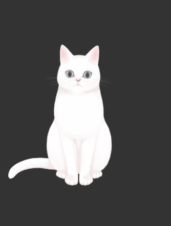
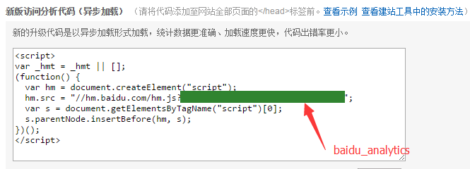

<!DOCTYPE html>


  


<html class="theme-next gemini use-motion" lang="zh-CN">
<head><meta name="generator" content="Hexo 3.8.0">
  <meta charset="UTF-8">
<meta http-equiv="X-UA-Compatible" content="IE=edge">
<meta name="viewport" content="width=device-width, initial-scale=1, maximum-scale=2">
<meta name="theme-color" content="#222">


<meta http-equiv="Cache-Control" content="no-transform">
<meta http-equiv="Cache-Control" content="no-siteapp">


<link href="/lib/font-awesome/css/font-awesome.min.css?v=4.6.2" rel="stylesheet" type="text/css">

<link href="/css/main.css?v=6.5.0" rel="stylesheet" type="text/css">


  <link rel="apple-touch-icon" sizes="180x180" href="/images/apple-touch-icon-next.png?v=6.5.0">


  <link rel="icon" type="image/png" sizes="32x32" href="/images/favicon-32x32-next.png?v=6.5.0">


  <link rel="icon" type="image/png" sizes="16x16" href="/images/favicon-16x16-next.png?v=6.5.0">


  <link rel="mask-icon" href="/images/logo.svg?v=6.5.0" color="#222">


<script type="text/javascript" id="hexo.configurations">
  var NexT = window.NexT || {};
  var CONFIG = {
    root: '/',
    scheme: 'Gemini',
    version: '6.5.0',
    sidebar: {"position":"left","display":"post","offset":12,"b2t":true,"scrollpercent":true,"onmobile":false},
    fancybox: false,
    fastclick: false,
    lazyload: false,
    tabs: true,
    motion: {"enable":true,"async":false,"transition":{"post_block":"fadeIn","post_header":"slideDownIn","post_body":"slideDownIn","coll_header":"slideLeftIn","sidebar":"slideUpIn"}},
    algolia: {
      applicationID: '',
      apiKey: '',
      indexName: '',
      hits: {"per_page":10},
      labels: {"input_placeholder":"Search for Posts","hits_empty":"We didn't find any results for the search: ${query}","hits_stats":"${hits} results found in ${time} ms"}
    }
  };
</script>


  


  <meta name="description" content="前言 原作者： TDsimon 转载来源： https://www.simon96.online/2018/10/12/hexo-tutorial/ 版权声明： 本博客所有文章除特别声明外，均采用 CC BY-NC-SA 4.0 许可协议。转载请注明出处！  博客搭建准备环境 Node.js 下载，并安装。详细步骤：https://www.simon96.online/2018/11/10/hex">
<meta name="keywords" content="hexo">
<meta property="og:type" content="article">
<meta property="og:title" content="【转载】最全Hexo博客搭建+主题优化+插件配置+常用操作+错误分析">
<meta property="og:url" content="http://blog.kuma8866.top/posts/1353166163/index.html">
<meta property="og:site_name" content="Kuma&#39;s Blog">
<meta property="og:description" content="前言 原作者： TDsimon 转载来源： https://www.simon96.online/2018/10/12/hexo-tutorial/ 版权声明： 本博客所有文章除特别声明外，均采用 CC BY-NC-SA 4.0 许可协议。转载请注明出处！  博客搭建准备环境 Node.js 下载，并安装。详细步骤：https://www.simon96.online/2018/11/10/hex">
<meta property="og:locale" content="zh-CN">
<meta property="og:image" content="http://blog.kuma8866.top/posts/1353166163/Epsilon2.1.gif">
<meta property="og:image" content="http://blog.kuma8866.top/posts/1353166163/Gantzert_Felixander.gif">
<meta property="og:image" content="http://blog.kuma8866.top/posts/1353166163/haru.gif">
<meta property="og:image" content="http://blog.kuma8866.top/posts/1353166163/miku.gif">
<meta property="og:image" content="http://blog.kuma8866.top/posts/1353166163/ni-j.gif">
<meta property="og:image" content="http://blog.kuma8866.top/posts/1353166163/nico.gif">
<meta property="og:image" content="http://blog.kuma8866.top/posts/1353166163/nietzche.gif">
<meta property="og:image" content="http://blog.kuma8866.top/posts/1353166163/nipsilon.gif">
<meta property="og:image" content="http://blog.kuma8866.top/posts/1353166163/nito.gif">
<meta property="og:image" content="http://blog.kuma8866.top/posts/1353166163/shizuku.gif">
<meta property="og:image" content="http://blog.kuma8866.top/posts/1353166163/tsumiki.gif">
<meta property="og:image" content="http://blog.kuma8866.top/posts/1353166163/wanko.gif">
<meta property="og:image" content="http://blog.kuma8866.top/posts/1353166163/z16.gif">
<meta property="og:image" content="http://blog.kuma8866.top/posts/1353166163/hibiki.gif">
<meta property="og:image" content="http://blog.kuma8866.top/posts/1353166163/koharu.gif">
<meta property="og:image" content="http://blog.kuma8866.top/posts/1353166163/haruto.gif">
<meta property="og:image" content="http://blog.kuma8866.top/posts/1353166163/Unitychan.gif">
<meta property="og:image" content="http://blog.kuma8866.top/posts/1353166163/tororo.gif">
<meta property="og:image" content="http://blog.kuma8866.top/posts/1353166163/hijiki.gif">
<meta property="og:image" content="http://blog.kuma8866.top/posts/1353166163/analytics-baidu-id.png">
<meta property="og:updated_time" content="2018-11-13T10:59:29.000Z">
<meta name="twitter:card" content="summary">
<meta name="twitter:title" content="【转载】最全Hexo博客搭建+主题优化+插件配置+常用操作+错误分析">
<meta name="twitter:description" content="前言 原作者： TDsimon 转载来源： https://www.simon96.online/2018/10/12/hexo-tutorial/ 版权声明： 本博客所有文章除特别声明外，均采用 CC BY-NC-SA 4.0 许可协议。转载请注明出处！  博客搭建准备环境 Node.js 下载，并安装。详细步骤：https://www.simon96.online/2018/11/10/hex">
<meta name="twitter:image" content="http://blog.kuma8866.top/posts/1353166163/Epsilon2.1.gif">


  <link rel="alternate" href="/atom.xml" title="Kuma's Blog" type="application/atom+xml">


  <link rel="canonical" href="http://blog.kuma8866.top/posts/1353166163/">


<script type="text/javascript" id="page.configurations">
  CONFIG.page = {
    sidebar: "",
  };
</script>

  <title>【转载】最全Hexo博客搭建+主题优化+插件配置+常用操作+错误分析 | Kuma's Blog</title>
  


  <script type="text/javascript">
    var _hmt = _hmt || [];
    (function() {
      var hm = document.createElement("script");
      hm.src = "https://hm.baidu.com/hm.js?bb5184da6d86a99b44651b67ec05e581";
      var s = document.getElementsByTagName("script")[0];
      s.parentNode.insertBefore(hm, s);
    })();
  </script>


  <noscript>
  <style type="text/css">
    .use-motion .motion-element,
    .use-motion .brand,
    .use-motion .menu-item,
    .sidebar-inner,
    .use-motion .post-block,
    .use-motion .pagination,
    .use-motion .comments,
    .use-motion .post-header,
    .use-motion .post-body,
    .use-motion .collection-title { opacity: initial; }

    .use-motion .logo,
    .use-motion .site-title,
    .use-motion .site-subtitle {
      opacity: initial;
      top: initial;
    }

    .use-motion {
      .logo-line-before i { left: initial; }
      .logo-line-after i { right: initial; }
    }
  </style>
</noscript>

</head>

<body itemscope="" itemtype="http://schema.org/WebPage" lang="zh-CN">

  
  
    
  

  <div class="container sidebar-position-left page-post-detail">
    <div class="headband"></div>

    <header id="header" class="header" itemscope="" itemtype="http://schema.org/WPHeader">
      <div class="header-inner"><div class="site-brand-wrapper">
  <div class="site-meta ">
    

    <div class="custom-logo-site-title">
      <a href="/" class="brand" rel="start">
        <span class="logo-line-before"><i></i></span>
        <span class="site-title">Kuma's Blog</span>
        <span class="logo-line-after"><i></i></span>
      </a>
    </div>
    
      
        <h1 class="site-subtitle" itemprop="description">Kuma桑の博客，Hexo强力驱动</h1>
      
    
  </div>

  <div class="site-nav-toggle">
    <button aria-label="切换导航栏">
      <span class="btn-bar"></span>
      <span class="btn-bar"></span>
      <span class="btn-bar"></span>
    </button>
  </div>
</div>


<nav class="site-nav">
  
    <ul id="menu" class="menu">
      
        
        
        
          
          <li class="menu-item menu-item-home">

    
    
    
      
    

    

    <a href="/" rel="section"><i class="menu-item-icon fa fa-fw fa-home"></i> <br>首页</a>

  </li>
        
        
        
          
          <li class="menu-item menu-item-tags">

    
    
    
      
    

    

    <a href="/tags/" rel="section"><i class="menu-item-icon fa fa-fw fa-tags"></i> <br>标签</a>

  </li>
        
        
        
          
          <li class="menu-item menu-item-categories">

    
    
    
      
    

    

    <a href="/categories/" rel="section"><i class="menu-item-icon fa fa-fw fa-th"></i> <br>分类</a>

  </li>
        
        
        
          
          <li class="menu-item menu-item-archives">

    
    
    
      
    

    

    <a href="/archives/" rel="section"><i class="menu-item-icon fa fa-fw fa-archive"></i> <br>归档</a>

  </li>
        
        
        
          
          <li class="menu-item menu-item-commonweal">

    
    
    
      
    

    

    <a href="/404/" rel="section"><i class="menu-item-icon fa fa-fw fa-heartbeat"></i> <br>公益 404</a>

  </li>
        
        
        
          
          <li class="menu-item menu-item-about">

    
    
    
      
    

    

    <a href="/about/" rel="section"><i class="menu-item-icon fa fa-fw fa-user"></i> <br>关于</a>

  </li>

      
      
        <li class="menu-item menu-item-search">
          
            <a href="javascript:;" class="popup-trigger">
          
            
              <i class="menu-item-icon fa fa-search fa-fw"></i> <br>搜索</a>
        </li>
      
    </ul>
  

  

  
    <div class="site-search">
      
  <div class="popup search-popup local-search-popup">
  <div class="local-search-header clearfix">
    <span class="search-icon">
      <i class="fa fa-search"></i>
    </span>
    <span class="popup-btn-close">
      <i class="fa fa-times-circle"></i>
    </span>
    <div class="local-search-input-wrapper">
      <input autocomplete="off" placeholder="搜索..." spellcheck="false" type="text" id="local-search-input">
    </div>
  </div>
  <div id="local-search-result"></div>
</div>


    </div>
  
</nav>


  


</div>
    </header>

    


    <main id="main" class="main">
      <div class="main-inner">
        <div class="content-wrap">
          
            

          
          <div id="content" class="content">
            

  <div id="posts" class="posts-expand">
    

  

  
  
  

  

  <article class="post post-type-normal" itemscope="" itemtype="http://schema.org/Article">
  
  
  
  <div class="post-block">
    <link itemprop="mainEntityOfPage" href="http://blog.kuma8866.top/posts/1353166163/">

    <span hidden itemprop="author" itemscope="" itemtype="http://schema.org/Person">
      <meta itemprop="name" content="Kuma">
      <meta itemprop="description" content="爱分享，爱技术，爱生活。">
      <meta itemprop="image" content="/images/avatar.png">
    </span>

    <span hidden itemprop="publisher" itemscope="" itemtype="http://schema.org/Organization">
      <meta itemprop="name" content="Kuma's Blog">
    </span>

    
      <header class="post-header">

        
        
          <h2 class="post-title" itemprop="name headline">【转载】最全Hexo博客搭建+主题优化+插件配置+常用操作+错误分析
              
            
          </h2>
        

        <div class="post-meta">
		  
			<i class="fa fa-thumb-tack"></i>
			<font color="7D26CD">置顶</font>
			<span class="post-meta-divider">|</span>
		  
          <span class="post-time">

            
            
            

            
              <span class="post-meta-item-icon">
                <i class="fa fa-calendar-o"></i>
              </span>
              
                <span class="post-meta-item-text">发表于</span>
              

              
                
              

              <time title="创建时间：2018-11-13 18:59:23 / 修改时间：18:59:29" itemprop="dateCreated datePublished" datetime="2018-11-13T18:59:23+08:00">2018-11-13</time>
            

            
              

              
            
          </span>

          
            <span class="post-category">
            
              <span class="post-meta-divider">|</span>
            
              <span class="post-meta-item-icon">
                <i class="fa fa-folder-o"></i>
              </span>
              
                <span class="post-meta-item-text">分类于</span>
              
              
                <span itemprop="about" itemscope="" itemtype="http://schema.org/Thing"><a href="/categories/hexo/" itemprop="url" rel="index"><span itemprop="name">hexo</span></a></span>

                
                
              
            </span>
          

          
            
          

          
          

          
            <span class="post-meta-divider">|</span>
            <span class="post-meta-item-icon">
            <i class="fa fa-eye"></i>
             阅读次数： 
            <span class="busuanzi-value" id="busuanzi_value_page_pv"></span>
            </span>
          

          
            <div class="post-symbolscount">
              

              
                <span class="post-meta-item-icon">
                  <i class="fa fa-file-word-o"></i>
                </span>
                
                  <span class="post-meta-item-text">本文字数：</span>
                
                <span title="本文字数">22k</span>
              

              
                <span class="post-meta-divider">|</span>
              

              
                <span class="post-meta-item-icon">
                  <i class="fa fa-clock-o"></i>
                </span>
                
                  <span class="post-meta-item-text">阅读时长 &asymp;</span>
                
                <span title="阅读时长">20 分钟</span>
              
            </div>
          

          

        </div>
      </header>
    

    
    
    
    <div class="post-body" itemprop="articleBody">

      
      

      
        <h3 id="前言"><a href="#前言" class="headerlink" title="前言"></a>前言</h3><blockquote>
<p><strong>原作者：</strong> TDsimon</p>
<p><strong>转载来源：</strong> <a href="https://www.simon96.online/2018/10/12/hexo-tutorial/" target="_blank" rel="noopener">https://www.simon96.online/2018/10/12/hexo-tutorial/</a></p>
<p><strong>版权声明：</strong> 本博客所有文章除特别声明外，均采用 <a href="https://creativecommons.org/licenses/by-nc-sa/4.0/" target="_blank" rel="noopener">CC BY-NC-SA 4.0</a> 许可协议。转载请注明出处！</p>
</blockquote>
<h3 id="博客搭建"><a href="#博客搭建" class="headerlink" title="博客搭建"></a>博客搭建</h3><h4 id="准备环境"><a href="#准备环境" class="headerlink" title="准备环境"></a>准备环境</h4><ol>
<li><p><a href="http://nodejs.org/" target="_blank" rel="noopener">Node.js</a> 下载，并安装。详细步骤：<a href="https://www.simon96.online/2018/11/10/hexo-env/" target="_blank" rel="noopener">https://www.simon96.online/2018/11/10/hexo-env/</a></p>
</li>
<li><p><a href="http://git-scm.com/" target="_blank" rel="noopener">Git</a> 下载，并安装。详细步骤：<a href="https://www.simon96.online/2018/11/10/hexo-env/" target="_blank" rel="noopener">https://www.simon96.online/2018/11/10/hexo-env/</a></p>
</li>
<li><p>安装Hexo，在命令行（即Git Bash）运行以下命令：</p>
<blockquote>
<p>npm install -g hexo-cli</p>
</blockquote>
</li>
<li><p>初始化Hexo，在命令行（即Git Bash）依次运行以下命令即可：</p>
<p>以下，即存放Hexo初始化文件的路径， 即站点目录。</p>
<figure class="highlight plain"><table><tr><td class="gutter"><pre><span class="line">1</span><br><span class="line">2</span><br><span class="line">3</span><br></pre></td><td class="code"><pre><span class="line">$ hexo init &lt;folder&gt;</span><br><span class="line">$ cd &lt;folder&gt;</span><br><span class="line">$ npm install</span><br></pre></td></tr></table></figure>
<p>新建完成后，在路径下，会产生这些文件和文件夹：</p>
<figure class="highlight plain"><table><tr><td class="gutter"><pre><span class="line">1</span><br><span class="line">2</span><br><span class="line">3</span><br><span class="line">4</span><br><span class="line">5</span><br><span class="line">6</span><br><span class="line">7</span><br><span class="line">8</span><br></pre></td><td class="code"><pre><span class="line">.</span><br><span class="line">├── _config.yml</span><br><span class="line">├── package.json</span><br><span class="line">├── scaffolds</span><br><span class="line">├── source</span><br><span class="line">|   ├── _drafts</span><br><span class="line">|   └── _posts</span><br><span class="line">└── themes</span><br></pre></td></tr></table></figure>
<p><strong>注</strong>：</p>
<ul>
<li><p>hexo相关命令均在<strong>站点目录</strong>下，用<strong>Git Bash</strong>运行。</p>
</li>
<li><p>站点配置文件：站点目录下的<code>_config.yml</code>。</p>
<p> 路径为<code>&lt;folder&gt;\_config.yml</code></p>
</li>
<li><p>主题配置文件：站点目录下的<code>themes</code>文件夹下的，主题文件夹下的<code>_config.yml</code>。</p>
<p> 路径为<code>&lt;folder&gt;\themes\&lt;主题文件夹&gt;\_config.yml</code></p>
</li>
</ul>
</li>
<li><p>启动服务器。在路径下，命令行（即Git Bash）输入以下命令，运行即可：</p>
<blockquote>
<p>hexo server</p>
</blockquote>
</li>
<li><p>浏览器访问网址： <code>http://localhost:4000/</code></p>
</li>
</ol>
<p>至此，您的Hexo博客已经搭建在本地。</p>
<h4 id="实施方案"><a href="#实施方案" class="headerlink" title="实施方案"></a>实施方案</h4><h5 id="方案一：GithubPages"><a href="#方案一：GithubPages" class="headerlink" title="方案一：GithubPages"></a>方案一：GithubPages</h5><ol>
<li><p>创建<a href="https://github.com/" target="_blank" rel="noopener">Github</a>账号</p>
</li>
<li><p>创建仓库， 仓库名为：&lt;Github账号名称&gt;.github.io</p>
</li>
<li><p>将本地Hexo博客推送到GithubPages</p>
<p>3.1. 安装<code>hexo-deployer-git</code>插件。在命令行（即Git Bash）运行以下命令即可：</p>
<figure class="highlight plain"><table><tr><td class="gutter"><pre><span class="line">1</span><br></pre></td><td class="code"><pre><span class="line">$ npm install hexo-deployer-git --save</span><br></pre></td></tr></table></figure>
<p>3.2. 添加SSH key。</p>
<ul>
<li><p>创建一个 SSH key 。在命令行（即Git Bash）输入以下命令， 回车三下即可：</p>
<figure class="highlight plain"><table><tr><td class="gutter"><pre><span class="line">1</span><br></pre></td><td class="code"><pre><span class="line">$ ssh-keygen -t rsa -C &quot;邮箱地址&quot;</span><br></pre></td></tr></table></figure>
</li>
<li><p>添加到 github。 复制密钥文件内容（路径形如<code>C:\Users\Administrator\.ssh\id_rsa.pub</code>），粘贴到<a href="https://github.com/settings/keys" target="_blank" rel="noopener">New SSH Key</a>即可。</p>
</li>
<li><p>测试是否添加成功。在命令行（即Git Bash）依次输入以下命令，返回“You’ve successfully authenticated”即成功：</p>
<figure class="highlight plain"><table><tr><td class="gutter"><pre><span class="line">1</span><br><span class="line">2</span><br></pre></td><td class="code"><pre><span class="line">$ ssh -T git@github.com</span><br><span class="line">$ yes</span><br></pre></td></tr></table></figure>
</li>
</ul>
<p>3.3. 修改<code>_config.yml</code>（在站点目录下）。文件末尾修改为：</p>
<figure class="highlight plain"><table><tr><td class="gutter"><pre><span class="line">1</span><br><span class="line">2</span><br><span class="line">3</span><br><span class="line">4</span><br><span class="line">5</span><br><span class="line">6</span><br></pre></td><td class="code"><pre><span class="line"># Deployment</span><br><span class="line">## Docs: https://hexo.io/docs/deployment.html</span><br><span class="line">deploy:</span><br><span class="line">  type: git</span><br><span class="line">  repo: git@github.com:&lt;Github账号名称&gt;/&lt;Github账号名称&gt;.github.io.git</span><br><span class="line">  branch: master</span><br></pre></td></tr></table></figure>
<p>注意：上面仓库地址写ssh地址，不写http地址。</p>
<p>3.4. 推送到GithubPages。在命令行（即Git Bash）依次输入以下命令， 返回<code>INFO Deploy done: git</code>即成功推送：</p>
<figure class="highlight plain"><table><tr><td class="gutter"><pre><span class="line">1</span><br><span class="line">2</span><br></pre></td><td class="code"><pre><span class="line">$ hexo g</span><br><span class="line">$ hexo d</span><br></pre></td></tr></table></figure>
</li>
<li><p>等待1分钟左右，浏览器访问网址： <code>https://&lt;Github账号名称&gt;.github.io</code></p>
</li>
</ol>
<p>至此，您的Hexo博客已经搭建在GithubPages, 域名为<code>https://&lt;Github账号名称&gt;.github.io</code>。</p>
<h5 id="方案二：GithubPages-域名"><a href="#方案二：GithubPages-域名" class="headerlink" title="方案二：GithubPages + 域名"></a>方案二：GithubPages + 域名</h5><p>在方案一的基础上，添加自定义域名（您购买的域名）。</p>
<ol>
<li><p>域名解析。</p>
<p>类型选择为 CNAME；</p>
<p>主机记录即域名前缀，填写为www；</p>
<p>记录值填写为自定义域名；</p>
<p>解析线路，TTL 默认即可。</p>
</li>
<li><p>仓库设置。</p>
<p>2.1. 打开博客仓库设置：<code>https://github.com/&lt;Github账号名称&gt;/&lt;Github账号名称&gt;.github.io/settings</code></p>
<p>2.2. 在Custom domain下，填写自定义域名，点击<code>save</code>。</p>
<p>2.3. 在站点目录的<code>source</code>文件夹下，创建并打开<code>CNAME.txt</code>，写入你的域名（如<code>www.simon96.online</code>），保存，并重命名为<code>CNAME</code>。</p>
</li>
<li><p>等待10分钟左右。</p>
<p>浏览器访问自定义域名。</p>
<p>至此，您的Hexo博客已经解析到自定义域名，<code>https://&lt;Github账号名称&gt;.github.io</code>依然可用。</p>
</li>
</ol>
<h5 id="方案三：GithubPages-CodingPages-域名"><a href="#方案三：GithubPages-CodingPages-域名" class="headerlink" title="方案三：GithubPages + CodingPages + 域名"></a>方案三：GithubPages + CodingPages + 域名</h5><p>GithubPages 在国内较慢，百度不收录，而CodingPages 在国外较快。所以在方案二的基础上，添加CodingPages 。</p>
<ol>
<li><p>创建<a href="https://coding.net/" target="_blank" rel="noopener">Coding</a>账号</p>
</li>
<li><p>创建仓库， 仓库名为：&lt;Coding账号名称&gt;</p>
</li>
<li><p>进入项目里『代码』页面，点击『一键开启静态 Pages』，稍等片刻CodingPages即可部署成功。</p>
</li>
<li><p>将本地Hexo博客推送到CodingPages</p>
<p>4.1. 鉴于创建GithubPages 时，已经生成过公钥。可直接复制密钥文件内容（路径形如<code>C:\Users\Administrator\.ssh\id_rsa.pub</code>）， 粘贴到<a href="https://dev.tencent.com/user/account/setting/keys" target="_blank" rel="noopener">新增公钥</a>。</p>
<p>4.2. 测试是否添加成功。在命令行（即Git Bash）依次输入以下命令，返回“You’ve successfully authenticated”即成功：</p>
<figure class="highlight plain"><table><tr><td class="gutter"><pre><span class="line">1</span><br><span class="line">2</span><br></pre></td><td class="code"><pre><span class="line">$ ssh -T git@git.coding.net</span><br><span class="line">$ yes</span><br></pre></td></tr></table></figure>
<p>4.3. 修改<code>_config.yml</code>（在存放Hexo初始化文件的路径下）。文件末尾修改为：</p>
<figure class="highlight plain"><table><tr><td class="gutter"><pre><span class="line">1</span><br><span class="line">2</span><br><span class="line">3</span><br><span class="line">4</span><br><span class="line">5</span><br><span class="line">6</span><br><span class="line">7</span><br><span class="line">8</span><br><span class="line">9</span><br></pre></td><td class="code"><pre><span class="line"># Deployment</span><br><span class="line">## Docs: https://hexo.io/docs/deployment.html</span><br><span class="line">deploy:</span><br><span class="line">- type: git</span><br><span class="line">  repo: git@github.com:&lt;Github账号名称&gt;/&lt;Github账号名称&gt;.github.io.git</span><br><span class="line">  branch: master</span><br><span class="line">- type: git</span><br><span class="line">  repo: git@git.dev.tencent.com:&lt;Coding账号名称&gt;/&lt;Coding账号名称&gt;.git</span><br><span class="line">  branch: master</span><br></pre></td></tr></table></figure>
<p>4.4. 推送到GithubPages。在命令行（即Git Bash）依次输入以下命令， 返回<code>INFO Deploy done: git</code>即成功推送：</p>
<figure class="highlight plain"><table><tr><td class="gutter"><pre><span class="line">1</span><br><span class="line">2</span><br></pre></td><td class="code"><pre><span class="line">$ hexo g</span><br><span class="line">$ hexo d</span><br></pre></td></tr></table></figure>
</li>
<li><p>域名解析</p>
<ol>
<li><p>添加 CNAME 记录指向 &lt;Coding账号名称&gt;.coding.me</p>
<p>类型选择为 CNAME；</p>
<p>主机记录即域名前缀，填写为www；</p>
<p>记录值填写为自定义域名；</p>
<p>解析线路，TTL 默认即可。</p>
</li>
<li><p>添加 两条A 记录指向 192.30.252.153和192.30.252.154</p>
<p>类型选择为 A；</p>
<p>主机记录即域名前缀，填写为@；</p>
<p>记录值填写为192.30.252.153和192.30.252.154；</p>
<p>解析线路，境外或谷歌。</p>
</li>
<li><p>在『Pages 服务』设置页（<code>https://dev.tencent.com/u/&lt;Coding账号名称&gt;/p/&lt;Coding账号名称&gt;/git/pages/settings</code>）中绑定自定义域名。</p>
</li>
</ol>
</li>
</ol>
<p>至此，您的Hexo博客已经解析到自定义域名，<code>https://&lt;Github账号名称&gt;.github.io</code>和<code>https://&lt;Coding账号名称&gt;.coding.me</code>依然可用。</p>
<h5 id="方案四：云服务器-域名"><a href="#方案四：云服务器-域名" class="headerlink" title="方案四：云服务器 + 域名"></a>方案四：云服务器 + 域名</h5><p>该方案需要先购买云服务器和域名。</p>
<ol>
<li><p>在云服务器安装Git 和 Nginx。(Git 用于版本管理和部署，Nginx 用于静态博客托管。)</p>
<p>登陆root用户，运行：</p>
<figure class="highlight plain"><table><tr><td class="gutter"><pre><span class="line">1</span><br><span class="line">2</span><br></pre></td><td class="code"><pre><span class="line">$ yum -y update</span><br><span class="line">$ yum install -y git nginx</span><br></pre></td></tr></table></figure>
</li>
<li><p>Nginx配置</p>
<p>2.1. 创建文件目录(用于博客站点文件存放)</p>
<figure class="highlight plain"><table><tr><td class="gutter"><pre><span class="line">1</span><br><span class="line">2</span><br><span class="line">3</span><br></pre></td><td class="code"><pre><span class="line">cd /usr/local/</span><br><span class="line">mkdir hexo</span><br><span class="line">chmod 775 -R /usr/local/hexo/</span><br></pre></td></tr></table></figure>
<p>2.2. 添加 index.html(用于检测配置 Nginx 是否成功)</p>
<figure class="highlight plain"><table><tr><td class="gutter"><pre><span class="line">1</span><br></pre></td><td class="code"><pre><span class="line">vim /usr/local/hexo/index.html</span><br></pre></td></tr></table></figure>
<p>添加以下代码，并保存。</p>
<figure class="highlight plain"><table><tr><td class="gutter"><pre><span class="line">1</span><br><span class="line">2</span><br><span class="line">3</span><br><span class="line">4</span><br><span class="line">5</span><br><span class="line">6</span><br><span class="line">7</span><br><span class="line">8</span><br><span class="line">9</span><br><span class="line">10</span><br></pre></td><td class="code"><pre><span class="line">&lt;!DOCTYPE html&gt;</span><br><span class="line">&lt;html&gt;</span><br><span class="line">  &lt;head&gt;</span><br><span class="line">    &lt;title&gt;&lt;/title&gt;</span><br><span class="line">    &lt;meta charset=&quot;UTF-8&quot;&gt;</span><br><span class="line">  &lt;/head&gt;</span><br><span class="line">  &lt;body&gt;</span><br><span class="line">    &lt;p&gt;Nginx running&lt;/p&gt;</span><br><span class="line">  &lt;/body&gt;</span><br><span class="line">&lt;/html&gt;</span><br></pre></td></tr></table></figure>
<p>2.3. 配置 Nginx 服务器</p>
<figure class="highlight plain"><table><tr><td class="gutter"><pre><span class="line">1</span><br></pre></td><td class="code"><pre><span class="line">vim /etc/nginx/nginx.conf</span><br></pre></td></tr></table></figure>
<p>修改server_name和root：</p>
<figure class="highlight plain"><table><tr><td class="gutter"><pre><span class="line">1</span><br><span class="line">2</span><br><span class="line">3</span><br><span class="line">4</span><br><span class="line">5</span><br><span class="line">6</span><br></pre></td><td class="code"><pre><span class="line">server &#123;</span><br><span class="line">      listen       80 default_server;</span><br><span class="line">      listen       [::]:80 default_server;</span><br><span class="line">      server_name  www.baidu.com; # 填个人域名      </span><br><span class="line">      root         /usr/local/hexo/;</span><br><span class="line">  &#125;</span><br></pre></td></tr></table></figure>
<p>2.4. 启动nginx服务；</p>
<figure class="highlight plain"><table><tr><td class="gutter"><pre><span class="line">1</span><br></pre></td><td class="code"><pre><span class="line">service nginx start</span><br></pre></td></tr></table></figure>
<p>2.5. 云服务器浏览器访问个人域名或IP，若跳转index.html，则配置完成，否则检查以上配置。</p>
</li>
<li><p>git配置</p>
<p>3.1. 创建文件目录, 用于私人 Git 仓库搭建, 并更改目录读写权限。</p>
<figure class="highlight plain"><table><tr><td class="gutter"><pre><span class="line">1</span><br><span class="line">2</span><br><span class="line">3</span><br></pre></td><td class="code"><pre><span class="line">cd /usr/local/</span><br><span class="line">mkdir hexoRepo</span><br><span class="line">chmod 775 -R /usr/local/hexoRepo/</span><br></pre></td></tr></table></figure>
<p>3.2. Git 初始化裸库。</p>
<figure class="highlight plain"><table><tr><td class="gutter"><pre><span class="line">1</span><br><span class="line">2</span><br></pre></td><td class="code"><pre><span class="line">cd hexoRepo/</span><br><span class="line">git init --bare hexo.git</span><br></pre></td></tr></table></figure>
<p>3.3. 创建 Git 钩子(hook)。</p>
<figure class="highlight plain"><table><tr><td class="gutter"><pre><span class="line">1</span><br></pre></td><td class="code"><pre><span class="line">vim /usr/local/hexoRepo/hexo.git/hooks/post-receive</span><br></pre></td></tr></table></figure>
<p>3.4. 输入以下信息，用于指定 Git 的源代码 和 Git 配置文件。</p>
<figure class="highlight plain"><table><tr><td class="gutter"><pre><span class="line">1</span><br><span class="line">2</span><br><span class="line">3</span><br></pre></td><td class="code"><pre><span class="line">#!/bin/bash</span><br><span class="line"></span><br><span class="line">git --work-tree=/usr/local/hexo --git-dir=/usr/local/hexoRepo/hexo.git checkout -f</span><br></pre></td></tr></table></figure>
<p>3.5. 保存并退出后, 给该文件添加可执行权限。</p>
<figure class="highlight plain"><table><tr><td class="gutter"><pre><span class="line">1</span><br></pre></td><td class="code"><pre><span class="line">chmod +x /usr/local/hexoRepo/hexo.git/hooks/post-receive</span><br></pre></td></tr></table></figure>
</li>
<li><p>本地博客推送到云服务器</p>
<p>4.1. 安装<code>hexo-deployer-git</code>插件。在命令行（即Git Bash）运行以下命令即可：</p>
<figure class="highlight plain"><table><tr><td class="gutter"><pre><span class="line">1</span><br></pre></td><td class="code"><pre><span class="line">$ npm install hexo-deployer-git --save</span><br></pre></td></tr></table></figure>
<p>4.2. 添加SSH key。</p>
<ul>
<li><p>创建一个 SSH key 。在命令行（即Git Bash）输入以下命令， 回车三下即可：</p>
<figure class="highlight plain"><table><tr><td class="gutter"><pre><span class="line">1</span><br></pre></td><td class="code"><pre><span class="line">$ ssh-keygen -t rsa -C &quot;邮箱地址&quot;</span><br></pre></td></tr></table></figure>
</li>
<li><p>添加到 github。 复制密钥文件内容（路径形如<code>C:\Users\Administrator\.ssh\id_rsa.pub</code>），粘贴到<a href="https://github.com/settings/keys" target="_blank" rel="noopener">New SSH Key</a>即可。</p>
</li>
<li><p>测试是否添加成功。在命令行（即Git Bash）依次输入以下命令，返回“You’ve successfully authenticated”即成功：</p>
<figure class="highlight plain"><table><tr><td class="gutter"><pre><span class="line">1</span><br><span class="line">2</span><br></pre></td><td class="code"><pre><span class="line">$ ssh -T git@github.com</span><br><span class="line">$ yes</span><br></pre></td></tr></table></figure>
</li>
</ul>
<p>4.3. 修改<code>_config.yml</code>（在站点目录下）。文件末尾修改为：</p>
<figure class="highlight plain"><table><tr><td class="gutter"><pre><span class="line">1</span><br><span class="line">2</span><br><span class="line">3</span><br><span class="line">4</span><br><span class="line">5</span><br><span class="line">6</span><br></pre></td><td class="code"><pre><span class="line"># Deployment</span><br><span class="line">## Docs: https://hexo.io/docs/deployment.html</span><br><span class="line">deploy:</span><br><span class="line">  type: git</span><br><span class="line">  repo: root@xxx.xxx.xxx.xxx:/usr/local/hexoRepo/hexo  //用户名@域名或 IP 地址:/usr/local/hexoRepo/hexo</span><br><span class="line">  branch: master</span><br></pre></td></tr></table></figure>
<p>注意：上面仓库地址写ssh地址，不写http地址。</p>
<p>4.4. 推送到GithubPages。在命令行（即Git Bash）依次输入以下命令， 返回<code>INFO Deploy done: git</code>即成功推送：</p>
<figure class="highlight plain"><table><tr><td class="gutter"><pre><span class="line">1</span><br><span class="line">2</span><br></pre></td><td class="code"><pre><span class="line">$ hexo g</span><br><span class="line">$ hexo d</span><br></pre></td></tr></table></figure>
</li>
<li><p>等待1分钟左右，浏览器访问个人域名。</p>
<p>至此，您的Hexo博客已经搭建在云服务器, 域名为个人域名。</p>
</li>
</ol>
<h3 id="主题优化"><a href="#主题优化" class="headerlink" title="主题优化"></a>主题优化</h3><h4 id="选择主题"><a href="#选择主题" class="headerlink" title="选择主题"></a>选择主题</h4><p>Hexo默认的主题是landscape，推荐以下主题：</p>
<ol>
<li><a href="https://github.com/shenliyang/hexo-theme-snippet#hexo-theme-snippet" target="_blank" rel="noopener">snippet</a></li>
<li><a href="https://github.com/iTimeTraveler/hexo-theme-hiero#hiero" target="_blank" rel="noopener">Hiero</a></li>
<li><a href="https://github.com/tangkunyin/hexo-theme-jsimple#jsimple" target="_blank" rel="noopener">JSimple</a></li>
<li><a href="https://github.com/chaooo/hexo-theme-BlueLake#bluelake" target="_blank" rel="noopener">BlueLake</a></li>
</ol>
<h4 id="应用主题"><a href="#应用主题" class="headerlink" title="应用主题"></a>应用主题</h4><ol>
<li>下载主题</li>
<li>将下载好的主题文件夹，粘贴到站点目录的<code>themes</code>下。</li>
<li>更改站点配置文件<code>_config.yml</code> 的theme字段，为主题文件夹的名称：</li>
</ol>
<figure class="highlight plain"><table><tr><td class="gutter"><pre><span class="line">1</span><br><span class="line">2</span><br><span class="line">3</span><br><span class="line">4</span><br></pre></td><td class="code"><pre><span class="line"># Extensions</span><br><span class="line">## Plugins: https://hexo.io/plugins/</span><br><span class="line">## Themes: https://hexo.io/themes/</span><br><span class="line">theme: &lt;主题文件夹的名称&gt;</span><br></pre></td></tr></table></figure>
<h4 id="主题优化-1"><a href="#主题优化-1" class="headerlink" title="主题优化"></a>主题优化</h4><p>以上主题都有比较详细的说明文档，本节主要解决主题优化的常见问题。</p>
<p>主题优化一般包括：</p>
<ul>
<li><p><strong>设置「RSS」</strong></p>
</li>
<li><p><strong>添加「标签」页面</strong></p>
</li>
<li><p><strong>添加「分类」页面</strong></p>
</li>
<li><p><strong>设置「字体」</strong></p>
<p>问题：引用国外字体镜像较慢。</p>
<p>解决：可以改用国内的。将\themes*\layout_partials\head external-fonts.swig文件中fonts.google.com改成fonts.lug.ustc.edu.cn。</p>
</li>
<li><p><strong>设置「代码高亮主题」</strong></p>
</li>
<li><p><strong>侧边栏社交链接</strong></p>
<p>问题：图标哪里找？</p>
<p>解决：<a href="https://fontawesome.com/icons?d=gallery" target="_blank" rel="noopener">Font Awesome</a></p>
</li>
<li><p><strong>开启打赏功能</strong></p>
<p>问题：微信支付宝二维码不美观，规格不一。</p>
<p>解决：<a href="https://cli.im/weixin" target="_blank" rel="noopener">在线生成二维码</a></p>
</li>
<li><p><strong>设置友情链接</strong></p>
</li>
<li><p><strong>腾讯公益404页面</strong></p>
</li>
<li><p><strong>站点建立时间</strong></p>
</li>
<li><p><strong>订阅微信公众号</strong></p>
</li>
<li><p><strong>设置「动画效果」</strong></p>
<p>问题：慢，需要等待 JavaScript 脚本完全加载完毕后才会显示内容。<br>解决：将主题配置文件<code>_config.yml</code>中，use_motion字段的值设为 <code>false</code> 来关闭动画。</p>
</li>
<li><p><strong>设置「背景动画」</strong></p>
</li>
</ul>
<p>主题优化还包括：</p>
<h5 id="添加背景图"><a href="#添加背景图" class="headerlink" title="添加背景图"></a>添加背景图</h5><p>在 themes/*/source/css/_custom/custom.styl 中添加如下代码：</p>
<figure class="highlight plain"><table><tr><td class="gutter"><pre><span class="line">1</span><br><span class="line">2</span><br><span class="line">3</span><br><span class="line">4</span><br><span class="line">5</span><br><span class="line">6</span><br><span class="line">7</span><br></pre></td><td class="code"><pre><span class="line">body&#123;</span><br><span class="line">    background:url(/images/bg.jpg);</span><br><span class="line">    background-size:cover;</span><br><span class="line">    background-repeat:no-repeat;</span><br><span class="line">    background-attachment:fixed;</span><br><span class="line">    background-position:center;</span><br><span class="line">&#125;</span><br></pre></td></tr></table></figure>
<h5 id="修改Logo字体"><a href="#修改Logo字体" class="headerlink" title="修改Logo字体"></a>修改Logo字体</h5><p>在 <code>themes/*/source/css/_custom/custom.styl</code> 中添加如下代码：</p>
<figure class="highlight plain"><table><tr><td class="gutter"><pre><span class="line">1</span><br><span class="line">2</span><br><span class="line">3</span><br><span class="line">4</span><br><span class="line">5</span><br><span class="line">6</span><br><span class="line">7</span><br><span class="line">8</span><br></pre></td><td class="code"><pre><span class="line">@font-face &#123;</span><br><span class="line">    font-family: Zitiming;</span><br><span class="line">    src: url(&apos;/fonts/Zitiming.ttf&apos;);</span><br><span class="line">&#125;</span><br><span class="line">.site-title &#123;</span><br><span class="line">    font-size: 40px !important;</span><br><span class="line">	font-family: &apos;Zitiming&apos; !important;</span><br><span class="line">&#125;</span><br></pre></td></tr></table></figure>
<p>其中字体文件在 <code>themes/next/source/fonts</code> 目录下，里面有个 <code>.gitkeep</code> 的隐藏文件，打开写入你要保留的字体文件，比如我的是就是写入 <code>Zitiming.ttf</code> ，具体字库自己从网上下载即可。</p>
<h5 id="修改内容区域的宽度"><a href="#修改内容区域的宽度" class="headerlink" title="修改内容区域的宽度"></a>修改内容区域的宽度</h5><p>编辑主题的 <code>source/css/_variables/custom.styl</code> 文件，新增变量：</p>
<figure class="highlight plain"><table><tr><td class="gutter"><pre><span class="line">1</span><br><span class="line">2</span><br><span class="line">3</span><br><span class="line">4</span><br><span class="line">5</span><br></pre></td><td class="code"><pre><span class="line">// 修改成你期望的宽度</span><br><span class="line">$content-desktop = 700px</span><br><span class="line"></span><br><span class="line">// 当视窗超过 1600px 后的宽度</span><br><span class="line">$content-desktop-large = 900px</span><br></pre></td></tr></table></figure>
<h5 id="网站标题栏背景颜色"><a href="#网站标题栏背景颜色" class="headerlink" title="网站标题栏背景颜色"></a>网站标题栏背景颜色</h5><figure class="highlight plain"><table><tr><td class="gutter"><pre><span class="line">1</span><br><span class="line">2</span><br><span class="line">3</span><br></pre></td><td class="code"><pre><span class="line">.site-meta &#123;</span><br><span class="line">  background: $blue; //修改为自己喜欢的颜色</span><br><span class="line">&#125;</span><br></pre></td></tr></table></figure>
<h5 id="自定义鼠标样式"><a href="#自定义鼠标样式" class="headerlink" title="自定义鼠标样式"></a>自定义鼠标样式</h5><p>打开 <code>themes/*/source/css/_custom/custom.styl</code> ,在里面写下如下代码：</p>
<figure class="highlight plain"><table><tr><td class="gutter"><pre><span class="line">1</span><br><span class="line">2</span><br><span class="line">3</span><br><span class="line">4</span><br><span class="line">5</span><br><span class="line">6</span><br><span class="line">7</span><br></pre></td><td class="code"><pre><span class="line">// 鼠标样式</span><br><span class="line">  * &#123;</span><br><span class="line">      cursor: url(&quot;http://om8u46rmb.bkt.clouddn.com/sword2.ico&quot;),auto!important</span><br><span class="line">  &#125;</span><br><span class="line">  :active &#123;</span><br><span class="line">      cursor: url(&quot;http://om8u46rmb.bkt.clouddn.com/sword1.ico&quot;),auto!important</span><br><span class="line">  &#125;</span><br></pre></td></tr></table></figure>
<h5 id="文章加密访问"><a href="#文章加密访问" class="headerlink" title="文章加密访问"></a>文章加密访问</h5><p>打开 <code>themes/*/layout/_partials/head.swig</code>文件,在 <code></code>之前插入代码：</p>
<figure class="highlight plain"><table><tr><td class="gutter"><pre><span class="line">1</span><br><span class="line">2</span><br><span class="line">3</span><br><span class="line">4</span><br><span class="line">5</span><br><span class="line">6</span><br><span class="line">7</span><br><span class="line">8</span><br><span class="line">9</span><br><span class="line">10</span><br></pre></td><td class="code"><pre><span class="line">&lt;script&gt;</span><br><span class="line">    (function()&#123;</span><br><span class="line">        if(&apos;&#123;&#123; page.password &#125;&#125;&apos;)&#123;</span><br><span class="line">            if (prompt(&apos;请输入密码&apos;) !== &apos;&#123;&#123; page.password &#125;&#125;&apos;)&#123;</span><br><span class="line">                alert(&apos;密码错误&apos;);</span><br><span class="line">                history.back();</span><br><span class="line">            &#125;</span><br><span class="line">        &#125;</span><br><span class="line">    &#125;)();</span><br><span class="line">&lt;/script&gt;</span><br></pre></td></tr></table></figure>
<p>写文章时加上<code>password: *</code>：</p>
<figure class="highlight plain"><table><tr><td class="gutter"><pre><span class="line">1</span><br><span class="line">2</span><br><span class="line">3</span><br><span class="line">4</span><br><span class="line">5</span><br></pre></td><td class="code"><pre><span class="line">---</span><br><span class="line">title: 2018</span><br><span class="line">date: 2018-10-25 16:10:03</span><br><span class="line">password: 123456</span><br><span class="line">---</span><br></pre></td></tr></table></figure>
<h5 id="实现点击出现桃心效果"><a href="#实现点击出现桃心效果" class="headerlink" title="实现点击出现桃心效果"></a>实现点击出现桃心效果</h5><ol>
<li>在<code>/themes/*/source/js/src</code>下新建文件<code>click.js</code>，接着把以下粘贴到<code>click.js</code>文件中。<br>代码如下：</li>
</ol>
<figure class="highlight plain"><table><tr><td class="gutter"><pre><span class="line">1</span><br></pre></td><td class="code"><pre><span class="line">!function(e,t,a)&#123;function n()&#123;c(&quot;.heart&#123;width: 10px;height: 10px;position: fixed;background: #f00;transform: rotate(45deg);-webkit-transform: rotate(45deg);-moz-transform: rotate(45deg);&#125;.heart:after,.heart:before&#123;content: &apos;&apos;;width: inherit;height: inherit;background: inherit;border-radius: 50%;-webkit-border-radius: 50%;-moz-border-radius: 50%;position: fixed;&#125;.heart:after&#123;top: -5px;&#125;.heart:before&#123;left: -5px;&#125;&quot;),o(),r()&#125;function r()&#123;for(var e=0;e&lt;d.length;e++)d[e].alpha&lt;=0?(t.body.removeChild(d[e].el),d.splice(e,1)):(d[e].y--,d[e].scale+=.004,d[e].alpha-=.013,d[e].el.style.cssText=&quot;left:&quot;+d[e].x+&quot;px;top:&quot;+d[e].y+&quot;px;opacity:&quot;+d[e].alpha+&quot;;transform:scale(&quot;+d[e].scale+&quot;,&quot;+d[e].scale+&quot;) rotate(45deg);background:&quot;+d[e].color+&quot;;z-index:99999&quot;);requestAnimationFrame(r)&#125;function o()&#123;var t=&quot;function&quot;==typeof e.onclick&amp;&amp;e.onclick;e.onclick=function(e)&#123;t&amp;&amp;t(),i(e)&#125;&#125;function i(e)&#123;var a=t.createElement(&quot;div&quot;);a.className=&quot;heart&quot;,d.push(&#123;el:a,x:e.clientX-5,y:e.clientY-5,scale:1,alpha:1,color:s()&#125;),t.body.appendChild(a)&#125;function c(e)&#123;var a=t.createElement(&quot;style&quot;);a.type=&quot;text/css&quot;;try&#123;a.appendChild(t.createTextNode(e))&#125;catch(t)&#123;a.styleSheet.cssText=e&#125;t.getElementsByTagName(&quot;head&quot;)[0].appendChild(a)&#125;function s()&#123;return&quot;rgb(&quot;+~~(255*Math.random())+&quot;,&quot;+~~(255*Math.random())+&quot;,&quot;+~~(255*Math.random())+&quot;)&quot;&#125;var d=[];e.requestAnimationFrame=function()&#123;return e.requestAnimationFrame||e.webkitRequestAnimationFrame||e.mozRequestAnimationFrame||e.oRequestAnimationFrame||e.msRequestAnimationFrame||function(e)&#123;setTimeout(e,1e3/60)&#125;&#125;(),n()&#125;(window,document);</span><br></pre></td></tr></table></figure>
<ol>
<li>在<code>\themes\*\layout\_layout.swig</code>文件末尾添加：</li>
</ol>
<figure class="highlight plain"><table><tr><td class="gutter"><pre><span class="line">1</span><br><span class="line">2</span><br></pre></td><td class="code"><pre><span class="line">&lt;!-- 页面点击小红心 --&gt;</span><br><span class="line">&lt;script type=&quot;text/javascript&quot; src=&quot;/js/src/clicklove.js&quot;&gt;&lt;/script&gt;</span><br></pre></td></tr></table></figure>
<h5 id="静态资源压缩"><a href="#静态资源压缩" class="headerlink" title="静态资源压缩"></a>静态资源压缩</h5><p>在站点目录下：</p>
<figure class="highlight plain"><table><tr><td class="gutter"><pre><span class="line">1</span><br></pre></td><td class="code"><pre><span class="line">$ npm install gulp -g</span><br></pre></td></tr></table></figure>
<p>安装gulp插件：</p>
<figure class="highlight plain"><table><tr><td class="gutter"><pre><span class="line">1</span><br><span class="line">2</span><br><span class="line">3</span><br><span class="line">4</span><br><span class="line">5</span><br></pre></td><td class="code"><pre><span class="line">npm install gulp-minify-css --save</span><br><span class="line">npm install gulp-uglify --save</span><br><span class="line">npm install gulp-htmlmin --save</span><br><span class="line">npm install gulp-htmlclean --save</span><br><span class="line">npm install gulp-imagemin --save</span><br></pre></td></tr></table></figure>
<p>在 <code>Hexo</code> 站点下新建 <code>gulpfile.js</code>文件，文件内容如下：</p>
<figure class="highlight plain"><table><tr><td class="gutter"><pre><span class="line">1</span><br><span class="line">2</span><br><span class="line">3</span><br><span class="line">4</span><br><span class="line">5</span><br><span class="line">6</span><br><span class="line">7</span><br><span class="line">8</span><br><span class="line">9</span><br><span class="line">10</span><br><span class="line">11</span><br><span class="line">12</span><br><span class="line">13</span><br><span class="line">14</span><br><span class="line">15</span><br><span class="line">16</span><br><span class="line">17</span><br><span class="line">18</span><br><span class="line">19</span><br><span class="line">20</span><br><span class="line">21</span><br><span class="line">22</span><br><span class="line">23</span><br><span class="line">24</span><br><span class="line">25</span><br><span class="line">26</span><br><span class="line">27</span><br><span class="line">28</span><br><span class="line">29</span><br><span class="line">30</span><br><span class="line">31</span><br><span class="line">32</span><br><span class="line">33</span><br><span class="line">34</span><br><span class="line">35</span><br><span class="line">36</span><br><span class="line">37</span><br><span class="line">38</span><br><span class="line">39</span><br><span class="line">40</span><br><span class="line">41</span><br><span class="line">42</span><br><span class="line">43</span><br><span class="line">44</span><br><span class="line">45</span><br></pre></td><td class="code"><pre><span class="line">var gulp = require(&apos;gulp&apos;);</span><br><span class="line">var minifycss = require(&apos;gulp-minify-css&apos;);</span><br><span class="line">var uglify = require(&apos;gulp-uglify&apos;);</span><br><span class="line">var htmlmin = require(&apos;gulp-htmlmin&apos;);</span><br><span class="line">var htmlclean = require(&apos;gulp-htmlclean&apos;);</span><br><span class="line">var imagemin = require(&apos;gulp-imagemin&apos;);</span><br><span class="line">// 压缩css文件</span><br><span class="line">gulp.task(&apos;minify-css&apos;, function() &#123;</span><br><span class="line">  return gulp.src(&apos;./public/**/*.css&apos;)</span><br><span class="line">  .pipe(minifycss())</span><br><span class="line">  .pipe(gulp.dest(&apos;./public&apos;));</span><br><span class="line">&#125;);</span><br><span class="line">// 压缩html文件</span><br><span class="line">gulp.task(&apos;minify-html&apos;, function() &#123;</span><br><span class="line">  return gulp.src(&apos;./public/**/*.html&apos;)</span><br><span class="line">  .pipe(htmlclean())</span><br><span class="line">  .pipe(htmlmin(&#123;</span><br><span class="line">    removeComments: true,</span><br><span class="line">    minifyJS: true,</span><br><span class="line">    minifyCSS: true,</span><br><span class="line">    minifyURLs: true,</span><br><span class="line">  &#125;))</span><br><span class="line">  .pipe(gulp.dest(&apos;./public&apos;))</span><br><span class="line">&#125;);</span><br><span class="line">// 压缩js文件</span><br><span class="line">gulp.task(&apos;minify-js&apos;, function() &#123;</span><br><span class="line">    return gulp.src([&apos;./public/**/.js&apos;,&apos;!./public/js/**/*min.js&apos;])</span><br><span class="line">        .pipe(uglify())</span><br><span class="line">        .pipe(gulp.dest(&apos;./public&apos;));</span><br><span class="line">&#125;);</span><br><span class="line">// 压缩 public/demo 目录内图片</span><br><span class="line">gulp.task(&apos;minify-images&apos;, function() &#123;</span><br><span class="line">    gulp.src(&apos;./public/demo/**/*.*&apos;)</span><br><span class="line">        .pipe(imagemin(&#123;</span><br><span class="line">           optimizationLevel: 5, //类型：Number  默认：3  取值范围：0-7（优化等级）</span><br><span class="line">           progressive: true, //类型：Boolean 默认：false 无损压缩jpg图片</span><br><span class="line">           interlaced: false, //类型：Boolean 默认：false 隔行扫描gif进行渲染</span><br><span class="line">           multipass: false, //类型：Boolean 默认：false 多次优化svg直到完全优化</span><br><span class="line">        &#125;))</span><br><span class="line">        .pipe(gulp.dest(&apos;./public/uploads&apos;));</span><br><span class="line">&#125;);</span><br><span class="line">// 默认任务</span><br><span class="line">gulp.task(&apos;default&apos;, [</span><br><span class="line">  &apos;minify-html&apos;,&apos;minify-css&apos;,&apos;minify-js&apos;,&apos;minify-images&apos;</span><br><span class="line">]);</span><br></pre></td></tr></table></figure>
<p>只需要每次在执行 <code>generate</code> 命令后执行 <code>gulp</code> 就可以实现对静态资源的压缩，压缩完成后执行 <code>deploy</code> 命令同步到服务器：</p>
<figure class="highlight plain"><table><tr><td class="gutter"><pre><span class="line">1</span><br><span class="line">2</span><br><span class="line">3</span><br></pre></td><td class="code"><pre><span class="line">hexo g</span><br><span class="line">gulp</span><br><span class="line">hexo d</span><br></pre></td></tr></table></figure>
<h5 id="修改访问URL路径"><a href="#修改访问URL路径" class="headerlink" title="修改访问URL路径"></a>修改访问URL路径</h5><p>默认情况下访问URL路径为：<code>domain/2018/10/18/关于本站</code>,修改为 <code>domain/About/关于本站</code>。 编辑 <code>Hexo</code> 站点下的 <code>_config.yml</code> 文件，修改其中的 <code>permalink</code>字段：</p>
<figure class="highlight plain"><table><tr><td class="gutter"><pre><span class="line">1</span><br></pre></td><td class="code"><pre><span class="line">permalink: :category/:title/</span><br></pre></td></tr></table></figure>
<h5 id="博文置顶"><a href="#博文置顶" class="headerlink" title="博文置顶"></a>博文置顶</h5><ol>
<li><p>安装插件</p>
<figure class="highlight plain"><table><tr><td class="gutter"><pre><span class="line">1</span><br><span class="line">2</span><br></pre></td><td class="code"><pre><span class="line">$ npm uninstall hexo-generator-index –save</span><br><span class="line">$ npm install hexo-generator-index-pin-top –save</span><br></pre></td></tr></table></figure>
<p>然后在需要置顶的文章的Front-matter中加上top即可：</p>
<figure class="highlight plain"><table><tr><td class="gutter"><pre><span class="line">1</span><br><span class="line">2</span><br><span class="line">3</span><br><span class="line">4</span><br><span class="line">5</span><br></pre></td><td class="code"><pre><span class="line">---</span><br><span class="line">title: 2018</span><br><span class="line">date: 2018-10-25 16:10:03</span><br><span class="line">top: 10</span><br><span class="line">---</span><br></pre></td></tr></table></figure>
</li>
<li><p>设置置顶标志</p>
<p>打开：/themes/*/layout/_macro/post.swig，定位到<code>&lt;div class=&quot;post-meta&quot;&gt;</code>标签下，在此便签下行，插入如下代码：</p>
<figure class="highlight yaml"><table><tr><td class="gutter"><pre><span class="line">1</span><br><span class="line">2</span><br><span class="line">3</span><br><span class="line">4</span><br><span class="line">5</span><br></pre></td><td class="code"><pre><span class="line"><span class="string">&#123;%</span> <span class="string">if</span> <span class="string">post.top</span> <span class="string">%&#125;</span></span><br><span class="line">  <span class="string">&lt;i</span> <span class="string">class="fa</span> <span class="string">fa-thumb-tack"&gt;&lt;/i&gt;</span></span><br><span class="line">  <span class="string">&lt;font</span> <span class="string">color=7D26CD&gt;置顶&lt;/font&gt;</span></span><br><span class="line">  <span class="string">&lt;span</span> <span class="string">class="post-meta-divider"&gt;|&lt;/span&gt;</span></span><br><span class="line"><span class="string">&#123;%</span> <span class="string">endif</span> <span class="string">%&#125;</span></span><br></pre></td></tr></table></figure>
</li>
</ol>
<h5 id="在右上角或者左上角实现fork-me-on-github"><a href="#在右上角或者左上角实现fork-me-on-github" class="headerlink" title="在右上角或者左上角实现fork me on github"></a>在右上角或者左上角实现fork me on github</h5><ol>
<li>选择样式<a href="https://blog.github.com/2008-12-19-github-ribbons/" target="_blank" rel="noopener">GitHub Ribbons</a>,</li>
<li>修改图片跳转链接,将<code>&lt;a href=&quot;https://github.com/you&quot;&gt;</code>中的链接换为自己Github链接：</li>
<li>打开 <code>themes/next/layout/_layout.swig</code> 文件，把代码复制到<code>&lt;div class=&quot;headband&quot;&gt;&lt;/div&gt;</code>下面。</li>
</ol>
<h5 id="主页文章添加边框阴影效果"><a href="#主页文章添加边框阴影效果" class="headerlink" title="主页文章添加边框阴影效果"></a>主页文章添加边框阴影效果</h5><p>打开 <code>themes/*/source/css/_custom/custom.styl</code> ,向里面加代码:</p>
<figure class="highlight plain"><table><tr><td class="gutter"><pre><span class="line">1</span><br><span class="line">2</span><br><span class="line">3</span><br><span class="line">4</span><br><span class="line">5</span><br><span class="line">6</span><br><span class="line">7</span><br><span class="line">8</span><br></pre></td><td class="code"><pre><span class="line">// 主页文章添加阴影效果</span><br><span class="line">.post &#123;</span><br><span class="line">   margin-top: 0px;</span><br><span class="line">   margin-bottom: 60px;</span><br><span class="line">   padding: 25px;</span><br><span class="line">   -webkit-box-shadow: 0 0 5px rgba(202, 203, 203, .5);</span><br><span class="line">   -moz-box-shadow: 0 0 5px rgba(202, 203, 204, .5);</span><br><span class="line">&#125;</span><br></pre></td></tr></table></figure>
<h5 id="显示当前浏览进度"><a href="#显示当前浏览进度" class="headerlink" title="显示当前浏览进度"></a>显示当前浏览进度</h5><p>修改<code>themes/*/_config.yml</code>，把 <code>false</code> 改为 <code>true</code>：</p>
<figure class="highlight plain"><table><tr><td class="gutter"><pre><span class="line">1</span><br><span class="line">2</span><br><span class="line">3</span><br><span class="line">4</span><br><span class="line">5</span><br></pre></td><td class="code"><pre><span class="line"># Back to top in sidebar</span><br><span class="line">b2t: true</span><br><span class="line"></span><br><span class="line"># Scroll percent label in b2t button</span><br><span class="line">scrollpercent: true</span><br></pre></td></tr></table></figure>
<h5 id="创建分类页"><a href="#创建分类页" class="headerlink" title="创建分类页"></a>创建分类页</h5><p>在终端窗口下，定位到 <code>Hexo</code> 站点目录下，新建：</p>
<figure class="highlight plain"><table><tr><td class="gutter"><pre><span class="line">1</span><br><span class="line">2</span><br></pre></td><td class="code"><pre><span class="line">$ cd &lt;站点目录&gt;</span><br><span class="line">$ hexo new page categories</span><br></pre></td></tr></table></figure>
<h5 id="加入-广告"><a href="#加入-广告" class="headerlink" title="加入 广告"></a>加入 广告</h5><p>主要有两种：<a href="https://ssp.baidu.com/static/register.html" target="_blank" rel="noopener">百度SSP</a>和<a href="https://www.google.com/adsense/start/#/?modal_active=none" target="_blank" rel="noopener">谷歌Adsense</a>。方法类似：</p>
<ol>
<li><p>注册，复制广告代码</p>
</li>
<li><p>部署到网站。</p>
<p>2.1. 新建 <code>theme/*/layout/_custom/google_ad.swig</code>，将 AdSense 上的代码粘贴进去</p>
<p>2.2. 头部。在 <code>theme/*/layout/_custom/head.swig</code> 中也粘贴一份</p>
<p>2.3. 每篇博客。在 <code>theme/*/layout/post.swig</code> 里中在希望看到的地方加上：</p>
<figure class="highlight plain"><table><tr><td class="gutter"><pre><span class="line">1</span><br></pre></td><td class="code"><pre><span class="line">&#123;% include &apos;_custom/google_ad.swig&apos; %&#125;</span><br></pre></td></tr></table></figure>
<p>例如：在 <code>&lt;div id=&quot;posts&quot; class=&quot;posts-expand&quot;&gt; &lt;/div&gt;</code> 中间插入，总代码如下：</p>
<figure class="highlight plain"><table><tr><td class="gutter"><pre><span class="line">1</span><br><span class="line">2</span><br><span class="line">3</span><br><span class="line">4</span><br><span class="line">5</span><br><span class="line">6</span><br></pre></td><td class="code"><pre><span class="line">&#123;% block content %&#125;</span><br><span class="line">  &lt;div id=&quot;posts&quot; class=&quot;posts-expand&quot;&gt;</span><br><span class="line">    &#123;&#123; post_template.render(page) &#125;&#125;</span><br><span class="line">    &#123;% include &apos;_custom/google_ad.swig&apos; %&#125;</span><br><span class="line">  &lt;/div&gt;</span><br><span class="line">&#123;% endblock %&#125;</span><br></pre></td></tr></table></figure>
</li>
<li><p>等待审核通过。如果失败，可再次申请。</p>
</li>
</ol>
<h5 id="添加萌萌哒"><a href="#添加萌萌哒" class="headerlink" title="添加萌萌哒"></a>添加萌萌哒</h5><ol>
<li><p>安装插件</p>
<figure class="highlight plain"><table><tr><td class="gutter"><pre><span class="line">1</span><br></pre></td><td class="code"><pre><span class="line">npm install --save hexo-helper-live2d</span><br></pre></td></tr></table></figure>
</li>
<li><p>复制你喜欢的模型名字：</p>
<p>Epsilon2.1</p>
<p><a href="https://huaji8.top/img/live2d/Epsilon2.1.gif" target="_blank" rel="noopener"></a></p>
<p>Gantzert_Felixander</p>
<p><a href="https://huaji8.top/img/live2d/Gantzert_Felixander.gif" target="_blank" rel="noopener"></a></p>
<p>haru</p>
<p><a href="https://huaji8.top/img/live2d/haru.gif" target="_blank" rel="noopener"></a></p>
<p>miku</p>
<p><a href="https://huaji8.top/img/live2d/miku.gif" target="_blank" rel="noopener"></a></p>
<p>ni-j</p>
<p><a href="https://huaji8.top/img/live2d/ni-j.gif" target="_blank" rel="noopener"></a></p>
<p>nico</p>
<p><a href="https://huaji8.top/img/live2d/nico.gif" target="_blank" rel="noopener"></a></p>
<p>nietzche</p>
<p><a href="https://huaji8.top/img/live2d/nietzche.gif" target="_blank" rel="noopener"></a></p>
<p>nipsilon</p>
<p><a href="https://huaji8.top/img/live2d/nipsilon.gif" target="_blank" rel="noopener"></a></p>
<p>nito</p>
<p><a href="https://huaji8.top/img/live2d/nito.gif" target="_blank" rel="noopener"></a></p>
<p>shizuku</p>
<p><a href="https://huaji8.top/img/live2d/shizuku.gif" target="_blank" rel="noopener"></a></p>
<p>tsumiki</p>
<p><a href="https://huaji8.top/img/live2d/tsumiki.gif" target="_blank" rel="noopener"></a></p>
<p>wanko</p>
<p><a href="https://huaji8.top/img/live2d/wanko.gif" target="_blank" rel="noopener"></a></p>
<p>z16</p>
<p><a href="https://huaji8.top/img/live2d/z16.gif" target="_blank" rel="noopener"></a></p>
<p>hibiki</p>
<p><a href="https://huaji8.top/img/live2d/hibiki.gif" target="_blank" rel="noopener"></a></p>
<p>koharu</p>
<p><a href="https://huaji8.top/img/live2d/koharu.gif" target="_blank" rel="noopener"></a></p>
<p>haruto</p>
<p><a href="https://huaji8.top/img/live2d/haruto.gif" target="_blank" rel="noopener"></a></p>
<p>Unitychan</p>
<p><a href="https://huaji8.top/img/live2d/Unitychan.gif" target="_blank" rel="noopener"></a></p>
<p>tororo</p>
<p><a href="https://huaji8.top/img/live2d/tororo.gif" target="_blank" rel="noopener"></a></p>
<p>hijiki</p>
<p><a href="https://huaji8.top/img/live2d/hijiki.gif" target="_blank" rel="noopener"></a></p>
</li>
<li><p>将以下代码添加到主题配置文件<code>_config.yml</code>，修改&lt;你喜欢的模型名字&gt;：</p>
<figure class="highlight plain"><table><tr><td class="gutter"><pre><span class="line">1</span><br><span class="line">2</span><br><span class="line">3</span><br><span class="line">4</span><br><span class="line">5</span><br><span class="line">6</span><br><span class="line">7</span><br><span class="line">8</span><br><span class="line">9</span><br><span class="line">10</span><br><span class="line">11</span><br><span class="line">12</span><br><span class="line">13</span><br><span class="line">14</span><br><span class="line">15</span><br><span class="line">16</span><br></pre></td><td class="code"><pre><span class="line">live2d:</span><br><span class="line">  enable: true</span><br><span class="line">  scriptFrom: local</span><br><span class="line">  pluginRootPath: live2dw/</span><br><span class="line">  pluginJsPath: lib/</span><br><span class="line">  pluginModelPath: assets/</span><br><span class="line">  tagMode: false</span><br><span class="line">  log: false</span><br><span class="line">  model:</span><br><span class="line">    use: live2d-widget-model-&lt;你喜欢的模型名字&gt;</span><br><span class="line">  display:</span><br><span class="line">    position: right</span><br><span class="line">    width: 150</span><br><span class="line">    height: 300</span><br><span class="line">  mobile:</span><br><span class="line">    show: true</span><br></pre></td></tr></table></figure>
</li>
<li><p>建配置文件</p>
<p>4.1. 在站点目录下建文件夹<code>live2d_models</code>，</p>
<p>4.2. 再在<code>live2d_models</code>下建文件夹<code>&lt;你喜欢的模型名字&gt;</code>,</p>
<p>4.3. 再在<code>&lt;你喜欢的模型名字&gt;</code>下建json文件：&lt;你喜欢的模型名字&gt;.model.json</p>
</li>
<li><p>安装模型。在命令行（即Git Bash）运行以下命令即可：</p>
<blockquote>
<p>npm install –save live2d-widget-model-&lt;你喜欢的模型名字&gt;</p>
</blockquote>
</li>
<li><p>在命令行（即Git Bash）运行以下命令， 在<code>http://127.0.0.1:4000/</code>查看测试结果:</p>
<blockquote>
<p>hexo clean &amp;&amp; hexo g &amp;&amp; hexo s</p>
</blockquote>
</li>
</ol>
<h3 id="插件配置"><a href="#插件配置" class="headerlink" title="插件配置"></a>插件配置</h3><p>以下插件（评论系统、数据统计与分析、内容分享服务、搜索服务）各选一个即可。</p>
<h4 id="评论系统"><a href="#评论系统" class="headerlink" title="评论系统"></a>评论系统</h4><table>
<thead>
<tr>
<th></th>
<th>推荐指数</th>
<th>优点</th>
<th>缺点</th>
</tr>
</thead>
<tbody>
<tr>
<td><a href="https://valine.js.org/" target="_blank" rel="noopener">Valine</a></td>
<td>4</td>
<td>每天30000条评论，10GB的储存</td>
<td>作者评论无标识</td>
</tr>
<tr>
<td><a href="https://livere.com/" target="_blank" rel="noopener">来必力/livere</a></td>
<td>4</td>
<td>多种账号登录</td>
<td>评论无法导出</td>
</tr>
<tr>
<td><a href="http://changyan.kuaizhan.com/" target="_blank" rel="noopener">畅言</a></td>
<td>3</td>
<td>美观</td>
<td>必须备案域名</td>
</tr>
<tr>
<td><a href="https://github.com/imsun/gitment" target="_blank" rel="noopener">gitment</a></td>
<td>3</td>
<td>简洁</td>
<td>只能登陆github评论</td>
</tr>
<tr>
<td>Disqus</td>
<td>1</td>
<td></td>
<td>需要翻*墙</td>
</tr>
</tbody>
</table>
<h5 id="Valine"><a href="#Valine" class="headerlink" title="Valine"></a>Valine</h5><p>1.1. 获取APP ID 和 APP Key</p>
<p>请先登录或注册 <a href="https://leancloud.cn/" target="_blank" rel="noopener">LeanCloud</a>, 进入控制台后点击左下角创建应用，</p>
<p>进入刚刚创建的应用，选择左下角的<code>设置</code>&gt;<code>应用Key</code>，然后就能看到你的<code>APP ID</code>和<code>APP Key</code>了。</p>
<p>1.2. 填写APP ID 和 APP Key到主题配置文件<code>_config.yml</code></p>
<p>1.3. 运行<code>hexo g&amp;&amp;hexo d</code>推送到博客。</p>
<h5 id="来必力-livere"><a href="#来必力-livere" class="headerlink" title="来必力/livere"></a>来必力/livere</h5><p>2.1. 登陆 <a href="https://livere.com/" target="_blank" rel="noopener">来必力</a> 获取你的 LiveRe UID。</p>
<p>2.2. 填写LiveRe UID到主题配置文件<code>_config.yml</code></p>
<h5 id="畅言"><a href="#畅言" class="headerlink" title="畅言"></a>畅言</h5><p>3.1.获取APP ID 和 APP Key</p>
<p>请先登录或注册 <a href="http://changyan.kuaizhan.com/" target="_blank" rel="noopener">畅言</a>, 点击“立即免费获取畅言”，</p>
<p>新建站点，点击管理，点击评论插件&gt;评论管理，</p>
<p>点击后台总览，然后就能看到你的<code>APP ID</code>和<code>APP Key</code>了。</p>
<p>3.2. 填写APP ID 和 APP Key到主题配置文件<code>_config.yml</code></p>
<p>3.3. 运行<code>hexo g&amp;&amp;hexo d</code>推送到博客。</p>
<h5 id="gitment"><a href="#gitment" class="headerlink" title="gitment"></a>gitment</h5><p>4.1. 安装插件：</p>
<blockquote>
<p>npm i –save gitment</p>
</blockquote>
<p>4.2. 申请应用</p>
<p>在<a href="https://github.com/settings/applications/new" target="_blank" rel="noopener">New OAuth App</a>为你的博客应用一个密钥:</p>
<figure class="highlight plain"><table><tr><td class="gutter"><pre><span class="line">1</span><br><span class="line">2</span><br><span class="line">3</span><br><span class="line">4</span><br></pre></td><td class="code"><pre><span class="line">Application name:随便写</span><br><span class="line">Homepage URL:这个也可以随意写,就写你的博客地址就行</span><br><span class="line">Application description:描述,也可以随意写</span><br><span class="line">Authorization callback URL:这个必须写你的博客地址</span><br></pre></td></tr></table></figure>
<p>4.3. 配置</p>
<p>编辑主题配置文件<code>themes/*/_config.yml</code>:</p>
<figure class="highlight plain"><table><tr><td class="gutter"><pre><span class="line">1</span><br><span class="line">2</span><br><span class="line">3</span><br><span class="line">4</span><br><span class="line">5</span><br><span class="line">6</span><br><span class="line">7</span><br><span class="line">8</span><br><span class="line">9</span><br><span class="line">10</span><br><span class="line">11</span><br><span class="line">12</span><br><span class="line">13</span><br><span class="line">14</span><br><span class="line">15</span><br></pre></td><td class="code"><pre><span class="line"># Gitment</span><br><span class="line"># Introduction: https://imsun.net/posts/gitment-introduction/</span><br><span class="line">gitment:</span><br><span class="line">  enable: true</span><br><span class="line">  mint: true # RECOMMEND, A mint on Gitment, to support count, language and proxy_gateway</span><br><span class="line">  count: true # Show comments count in post meta area</span><br><span class="line">  lazy: false # Comments lazy loading with a button</span><br><span class="line">  cleanly: false # Hide &apos;Powered by ...&apos; on footer, and more</span><br><span class="line">  language: # Force language, or auto switch by theme</span><br><span class="line">  github_user: &#123;you github user id&#125;</span><br><span class="line">  github_repo: 公开的git仓库,评论会作为那个项目的issue</span><br><span class="line">  client_id: &#123;刚才申请的ClientID&#125;</span><br><span class="line">  client_secret: &#123;刚才申请的Client Secret&#125;</span><br><span class="line">  proxy_gateway: # Address of api proxy, See: https://github.com/aimingoo/intersect</span><br><span class="line">  redirect_protocol: # Protocol of redirect_uri with force_redirect_pro</span><br></pre></td></tr></table></figure>
<h5 id="Disqus"><a href="#Disqus" class="headerlink" title="Disqus"></a>Disqus</h5><p>编辑 主题配置文件<code>themes/*/_config.yml</code>， 将 disqus 下的 enable 设定为 true，同时提供您的 shortname。count 用于指定是否显示评论数量。</p>
<figure class="highlight plain"><table><tr><td class="gutter"><pre><span class="line">1</span><br><span class="line">2</span><br><span class="line">3</span><br><span class="line">4</span><br></pre></td><td class="code"><pre><span class="line">disqus:</span><br><span class="line">  enable: false</span><br><span class="line">  shortname:</span><br><span class="line">  count: true</span><br></pre></td></tr></table></figure>
<h4 id="数据统计与分析"><a href="#数据统计与分析" class="headerlink" title="数据统计与分析"></a>数据统计与分析</h4><table>
<thead>
<tr>
<th></th>
<th>推荐指数</th>
<th>优点</th>
<th>缺点</th>
</tr>
</thead>
<tbody>
<tr>
<td><a href="http://ibruce.info/2015/04/04/busuanzi/" target="_blank" rel="noopener">不蒜子</a></td>
<td>4</td>
<td>可直接将访问次数显示在您在网页上（也可不显示）</td>
<td>只计数</td>
</tr>
<tr>
<td>百度统计</td>
<td>3</td>
<td></td>
<td>收录慢</td>
</tr>
</tbody>
</table>
<h5 id="不蒜子"><a href="#不蒜子" class="headerlink" title="不蒜子"></a>不蒜子</h5><p>编辑 主题配置文件 <code>themes/*/_config.yml</code>中的<code>busuanzi_count</code>的配置项即可。</p>
<ul>
<li>当<code>enable: true</code>时，代表开启全局开关。</li>
<li>若<code>site_uv</code>（本站访客数）、<code>site_pv</code>（本站访客数）、<code>page_pv</code>（本文总阅读量）的值均为<code>false</code>时，不蒜子仅作记录而不会在页面上显示。</li>
</ul>
<p>注意：</p>
<figure class="highlight plain"><table><tr><td class="gutter"><pre><span class="line">1</span><br></pre></td><td class="code"><pre><span class="line">不蒜子官方因七牛强制过期原有的『dn-lbstatics.qbox.me』域名（预计2018年10月初），与客服沟通数次无果，即使我提出为此付费也不行，只能更换域名到『busuanzi.ibruce.info』！</span><br></pre></td></tr></table></figure>
<p>解决办法：</p>
<ol>
<li><p>找到主题调用不蒜子的swig文件。一般在”\themes*\layout_third-party\analytics\busuanzi-counter.swig”</p>
</li>
<li><p>更改域名</p>
<figure class="highlight plain"><table><tr><td class="gutter"><pre><span class="line">1</span><br><span class="line">2</span><br><span class="line">3</span><br><span class="line">4</span><br></pre></td><td class="code"><pre><span class="line">把原有的：</span><br><span class="line">&lt;script async src=&quot;//dn-lbstatics.qbox.me/busuanzi/2.3/busuanzi.pure.mini.js&quot;&gt;&lt;/script&gt;</span><br><span class="line">域名改一下即可：</span><br><span class="line">&lt;script async src=&quot;//busuanzi.ibruce.info/busuanzi/2.3/busuanzi.pure.mini.js&quot;&gt;&lt;/script&gt;</span><br></pre></td></tr></table></figure>
</li>
</ol>
<h5 id="百度统计"><a href="#百度统计" class="headerlink" title="百度统计"></a>百度统计</h5><ol>
<li><p>登录 <a href="http://tongji.baidu.com/" target="_blank" rel="noopener">百度统计</a>，定位到站点的代码获取页面</p>
</li>
<li><p>复制统计脚本 id，如图：</p>
<p><a href="http://theme-next.iissnan.com/uploads/five-minutes-setup/analytics-baidu-id.png" target="_blank" rel="noopener"></a></p>
</li>
<li><p>编辑 主题配置文件<code>themes/*/_config.yml</code>，修改字段 <code>google_analytics</code>，值设置成你的统计脚本 id。</p>
</li>
</ol>
<h4 id="内容分享服务"><a href="#内容分享服务" class="headerlink" title="内容分享服务"></a>内容分享服务</h4><table>
<thead>
<tr>
<th></th>
<th>推荐指数</th>
<th>优点</th>
<th>缺点</th>
</tr>
</thead>
<tbody>
<tr>
<td><a href="http://share.baidu.com/" target="_blank" rel="noopener">百度分享</a></td>
<td>4</td>
<td>稳定</td>
<td>不太美观</td>
</tr>
<tr>
<td><a href="https://github.com/revir/need-more-share2" target="_blank" rel="noopener">need-more-share2</a></td>
<td>4</td>
<td>美观</td>
<td>更新不及时（比如微信分享API）</td>
</tr>
</tbody>
</table>
<h5 id="百度分享"><a href="#百度分享" class="headerlink" title="百度分享"></a>百度分享</h5><p>编辑 主题配置文件，添加/修改字段 <code>baidushare</code>，值为 <code>true</code>即可。</p>
<figure class="highlight plain"><table><tr><td class="gutter"><pre><span class="line">1</span><br><span class="line">2</span><br></pre></td><td class="code"><pre><span class="line"># 百度分享服务</span><br><span class="line">baidushare: true</span><br></pre></td></tr></table></figure>
<h5 id="need-more-share2"><a href="#need-more-share2" class="headerlink" title="need-more-share2"></a>need-more-share2</h5><p>编辑 主题配置文件，添加/修改字段 <code>needmoreshare2</code>，值为 <code>true</code>即可。</p>
<figure class="highlight plain"><table><tr><td class="gutter"><pre><span class="line">1</span><br><span class="line">2</span><br></pre></td><td class="code"><pre><span class="line">needmoreshare2:</span><br><span class="line">  enable: true</span><br></pre></td></tr></table></figure>
<h4 id="搜索服务"><a href="#搜索服务" class="headerlink" title="搜索服务"></a>搜索服务</h4><table>
<thead>
<tr>
<th></th>
<th>推荐指数</th>
<th>优点</th>
<th>缺点</th>
</tr>
</thead>
<tbody>
<tr>
<td>Local Search</td>
<td>4</td>
<td>配置方便</td>
<td></td>
</tr>
<tr>
<td>Swiftype</td>
<td>2</td>
<td></td>
<td>需注册</td>
</tr>
<tr>
<td>Algolia</td>
<td>2</td>
<td></td>
<td>需注册</td>
</tr>
</tbody>
</table>
<h5 id="Local-Search"><a href="#Local-Search" class="headerlink" title="Local Search"></a>Local Search</h5><p>添加百度/谷歌/本地 自定义站点内容搜索</p>
<ol>
<li><p>安装 <code>hexo-generator-searchdb</code>，在站点的根目录下执行以下命令：</p>
<figure class="highlight plain"><table><tr><td class="gutter"><pre><span class="line">1</span><br></pre></td><td class="code"><pre><span class="line">$ npm install hexo-generator-searchdb --save</span><br></pre></td></tr></table></figure>
</li>
<li><p>编辑 站点配置文件，新增以下内容到任意位置：</p>
<figure class="highlight plain"><table><tr><td class="gutter"><pre><span class="line">1</span><br><span class="line">2</span><br><span class="line">3</span><br><span class="line">4</span><br><span class="line">5</span><br></pre></td><td class="code"><pre><span class="line">search:</span><br><span class="line">  path: search.xml</span><br><span class="line">  field: post</span><br><span class="line">  format: html</span><br><span class="line">  limit: 10000</span><br></pre></td></tr></table></figure>
</li>
<li><p>编辑 主题配置文件，启用本地搜索功能：</p>
<figure class="highlight plain"><table><tr><td class="gutter"><pre><span class="line">1</span><br><span class="line">2</span><br><span class="line">3</span><br></pre></td><td class="code"><pre><span class="line"># Local search</span><br><span class="line">local_search:</span><br><span class="line">  enable: true</span><br></pre></td></tr></table></figure>
</li>
</ol>
<h3 id="错误分析"><a href="#错误分析" class="headerlink" title="错误分析"></a>错误分析</h3><p>如果你使用Hexo遇到同样的问题,这里有一些常见问题的解决方案。</p>
<h4 id="YAML-Parsing-Error"><a href="#YAML-Parsing-Error" class="headerlink" title="YAML Parsing Error"></a>YAML Parsing Error</h4><figure class="highlight plain"><table><tr><td class="gutter"><pre><span class="line">1</span><br><span class="line">2</span><br></pre></td><td class="code"><pre><span class="line">JS-YAML: incomplete explicit mapping pair; a key node is missed at line 18, column 29:</span><br><span class="line">      last_updated: Last updated: %s</span><br></pre></td></tr></table></figure>
<ol>
<li>参数中包含冒号，请用加引号，如<code>Last updated: %s</code></li>
</ol>
<figure class="highlight plain"><table><tr><td class="gutter"><pre><span class="line">1</span><br><span class="line">2</span><br></pre></td><td class="code"><pre><span class="line">JS-YAML: bad indentation of a mapping entry at line 18, column 31:</span><br><span class="line">      last_updated：&quot;Last updated: %s&quot;</span><br></pre></td></tr></table></figure>
<ol>
<li>字段后面的冒号必须为<strong>英文冒号</strong>，如：last_updated:</li>
<li>字段冒号后面必须跟一个空格，如：last_updated: “Last updated: %s”</li>
</ol>
<h4 id="EMFILE-Error"><a href="#EMFILE-Error" class="headerlink" title="EMFILE Error"></a>EMFILE Error</h4><figure class="highlight plain"><table><tr><td class="gutter"><pre><span class="line">1</span><br></pre></td><td class="code"><pre><span class="line">Error: EMFILE, too many open files</span><br></pre></td></tr></table></figure>
<p>生成大量的文件时，可能遇到EMFILE错误。</p>
<p>可以运行以下命令来增加允许同步I / O操作的数量。</p>
<figure class="highlight plain"><table><tr><td class="gutter"><pre><span class="line">1</span><br></pre></td><td class="code"><pre><span class="line">$ ulimit -n 10000</span><br></pre></td></tr></table></figure>
<h4 id="Process-Out-of-Memory"><a href="#Process-Out-of-Memory" class="headerlink" title="Process Out of Memory"></a>Process Out of Memory</h4><p>当<code>hexo g</code>时，遇到以下错误：</p>
<figure class="highlight plain"><table><tr><td class="gutter"><pre><span class="line">1</span><br></pre></td><td class="code"><pre><span class="line">FATAL ERROR: CALL_AND_RETRY_LAST Allocation failed - process out of memory</span><br></pre></td></tr></table></figure>
<p>如下，更改<code>hexo-cli</code>文件的第一行，来增大nodejs堆内存.该bug已在<a href="https://github.com/hexojs/hexo/issues/1735" target="_blank" rel="noopener">新版本</a>修复。</p>
<figure class="highlight plain"><table><tr><td class="gutter"><pre><span class="line">1</span><br></pre></td><td class="code"><pre><span class="line">#!/usr/bin/env node --max_old_space_size=8192</span><br></pre></td></tr></table></figure>
<h4 id="Git-Deployment-Problems"><a href="#Git-Deployment-Problems" class="headerlink" title="Git Deployment Problems"></a>Git Deployment Problems</h4><ol>
<li><p><strong>RPC failed</strong></p>
<figure class="highlight plain"><table><tr><td class="gutter"><pre><span class="line">1</span><br><span class="line">2</span><br><span class="line">3</span><br></pre></td><td class="code"><pre><span class="line">error: RPC failed; result=22, HTTP code = 403</span><br><span class="line"></span><br><span class="line">fatal: &apos;username.github.io&apos; does not appear to be a git repository</span><br></pre></td></tr></table></figure>
<p>确保你有你的电脑上设置git正确或尝试使用HTTPS存储库URL。</p>
</li>
<li><p><strong>Error: ENOENT: no such file or directory</strong></p>
</li>
</ol>
<p>这个需要有一定的git的知识，因为可能是由于写错了标签,类别,或文件名，导致本地和github冲突了，Git不能自动合并这一变化所以它打破了自动分支。</p>
<p><strong>解决办法：</strong></p>
<ol>
<li>检查文章的标签和类别,确保本地和github上是相同的。</li>
<li>合并分支（Commit）。</li>
<li>清除，重构。在站点目录下，命令行（即Git Bash）运行<code>hexo clean</code>和<code>hexo g</code></li>
<li>手动将站点目录下的<code>public</code>文件夹复制到您的桌面</li>
<li>从你的master分支切换到部署在本地分支。</li>
<li>从桌面复制<code>public</code>文件夹到本地分支。</li>
<li>合并分支到github（Commit）。</li>
<li>切回master分支。</li>
</ol>
<h4 id="Server-Problems"><a href="#Server-Problems" class="headerlink" title="Server Problems"></a>Server Problems</h4><figure class="highlight plain"><table><tr><td class="gutter"><pre><span class="line">1</span><br></pre></td><td class="code"><pre><span class="line">Error: listen EADDRINUSE</span><br></pre></td></tr></table></figure>
<p>你可能使用相同的端口，同时开启了两个Hexo服务器。如果需要同时开启，可以尝试修改端口设置：</p>
<figure class="highlight plain"><table><tr><td class="gutter"><pre><span class="line">1</span><br></pre></td><td class="code"><pre><span class="line">$ hexo server -p 5000</span><br></pre></td></tr></table></figure>
<h4 id="Plugin-Installation-Problems"><a href="#Plugin-Installation-Problems" class="headerlink" title="Plugin Installation Problems"></a>Plugin Installation Problems</h4><figure class="highlight plain"><table><tr><td class="gutter"><pre><span class="line">1</span><br></pre></td><td class="code"><pre><span class="line">npm ERR! node-waf configure build</span><br></pre></td></tr></table></figure>
<p>这个错误可能发生在试图安装一个用Cc++或另一个javascript语言编写的插件。确保您已经安装了正确的编译器在您的计算机上。</p>
<h4 id="Error-with-DTrace-Mac-OS-X"><a href="#Error-with-DTrace-Mac-OS-X" class="headerlink" title="Error with DTrace (Mac OS X)"></a>Error with DTrace (Mac OS X)</h4><figure class="highlight plain"><table><tr><td class="gutter"><pre><span class="line">1</span><br><span class="line">2</span><br><span class="line">3</span><br></pre></td><td class="code"><pre><span class="line">&#123; [Error: Cannot find module &apos;./build/Release/DTraceProviderBindings&apos;] code: &apos;MODULE_NOT_FOUND&apos; &#125;</span><br><span class="line">&#123; [Error: Cannot find module &apos;./build/default/DTraceProviderBindings&apos;] code: &apos;MODULE_NOT_FOUND&apos; &#125;</span><br><span class="line">&#123; [Error: Cannot find module &apos;./build/Debug/DTraceProviderBindings&apos;] code: &apos;MODULE_NOT_FOUND&apos; &#125;</span><br></pre></td></tr></table></figure>
<p>DTrace安装可能有问题，重装:</p>
<figure class="highlight plain"><table><tr><td class="gutter"><pre><span class="line">1</span><br></pre></td><td class="code"><pre><span class="line">$ npm install hexo --no-optional</span><br></pre></td></tr></table></figure>
<p>详见 <a href="https://github.com/hexojs/hexo/issues/1326#issuecomment-113871796" target="_blank" rel="noopener">#1326</a></p>
<h4 id="Iterate-Data-Model-on-Jade-or-Swig"><a href="#Iterate-Data-Model-on-Jade-or-Swig" class="headerlink" title="Iterate Data Model on Jade or Swig"></a>Iterate Data Model on Jade or Swig</h4><p>Hexo使用仓库的数据模型。这不是一个数组,所以你可能需要将对象转换为iterable。</p>
<figure class="highlight plain"><table><tr><td class="gutter"><pre><span class="line">1</span><br><span class="line">2</span><br></pre></td><td class="code"><pre><span class="line">&#123;% for post in site.posts.toArray() %&#125;</span><br><span class="line">&#123;% endfor %&#125;</span><br></pre></td></tr></table></figure>
<h4 id="Data-Not-Updated"><a href="#Data-Not-Updated" class="headerlink" title="Data Not Updated"></a>Data Not Updated</h4><p>一些数据不能更新或新生成的文件的最后一个版本完全相同。清理缓存，再试一次：</p>
<figure class="highlight plain"><table><tr><td class="gutter"><pre><span class="line">1</span><br></pre></td><td class="code"><pre><span class="line">$ hexo clean</span><br></pre></td></tr></table></figure>
<h4 id="No-command-is-executed"><a href="#No-command-is-executed" class="headerlink" title="No command is executed"></a>No command is executed</h4><p>那个不能使用除<code>help</code>、<code>init</code>和<code>version</code>以外的命令行（即Git Bash）时, 有可能时站点目录下的<code>package.json</code>文件，缺少<code>hexo</code> ，如下:</p>
<figure class="highlight plain"><table><tr><td class="gutter"><pre><span class="line">1</span><br><span class="line">2</span><br><span class="line">3</span><br><span class="line">4</span><br><span class="line">5</span><br></pre></td><td class="code"><pre><span class="line">&#123;</span><br><span class="line">  &quot;hexo&quot;: &#123;</span><br><span class="line">    &quot;version&quot;: &quot;3.2.2&quot;</span><br><span class="line">  &#125;</span><br><span class="line">&#125;</span><br></pre></td></tr></table></figure>
<h4 id="Escape-Contents"><a href="#Escape-Contents" class="headerlink" title="Escape Contents"></a>Escape Contents</h4><p>Hexo使用Nunjucks渲染的页面. <code>{ { } }</code>或<code>{ % % }</code>将解析和可能会引起麻烦， 如果要在博文中出现，必须使用三引号：</p>
<figure class="highlight plain"><table><tr><td class="gutter"><pre><span class="line">1</span><br></pre></td><td class="code"><pre><span class="line">Hello &#123;&#123; sensitive &#125;&#125;</span><br></pre></td></tr></table></figure>
<figure class="highlight plain"><table><tr><td class="gutter"><pre><span class="line">1</span><br><span class="line">2</span><br><span class="line">3</span><br><span class="line">4</span><br><span class="line">5</span><br><span class="line">6</span><br><span class="line">7</span><br></pre></td><td class="code"><pre><span class="line">#### ENOSPC Error (Linux)</span><br><span class="line"></span><br><span class="line">如果运行命令`$ hexo server` 返回一个错误:</span><br><span class="line">Error: watch ENOSPC …</span><br><span class="line">可以通过运行`$ npm dedupe`或者以下命令行（即Git Bash）：</span><br><span class="line">$ echo fs.inotify.max_user_watches=524288 | sudo tee -a /etc/sysctl.conf &amp;&amp; sudo sysctl -p</span><br><span class="line">来增加测试时，你可以看见的文件数量。</span><br></pre></td></tr></table></figure>
<figure class="highlight plain"><table><tr><td class="gutter"><pre><span class="line">1</span><br><span class="line">2</span><br><span class="line">3</span><br><span class="line">4</span><br><span class="line">5</span><br><span class="line">6</span><br><span class="line">7</span><br><span class="line">8</span><br><span class="line">9</span><br></pre></td><td class="code"><pre><span class="line">#### EMPERM Error (Windows Subsystem for Linux)</span><br><span class="line"></span><br><span class="line">如果在Windows Subsystem for Linux，运行命令`$ hexo server` 返回这个错误:</span><br><span class="line">Error: watch /path/to/hexo/theme/ EMPERM</span><br><span class="line"></span><br><span class="line">因为目前在Windows Subsystem for Linux中，有些内容更改时，还不能实时更新到hexo服务器。</span><br><span class="line">所以需要重新编译，再启动服务器：</span><br><span class="line">$ hexo generate</span><br><span class="line">$ hexo server -s</span><br></pre></td></tr></table></figure>
<figure class="highlight plain"><table><tr><td class="gutter"><pre><span class="line">1</span><br><span class="line">2</span><br><span class="line">3</span><br><span class="line">4</span><br><span class="line">5</span><br><span class="line">6</span><br><span class="line">7</span><br></pre></td><td class="code"><pre><span class="line">#### Template render error</span><br><span class="line"></span><br><span class="line">有时运行命令`$ hexo generate` 返回一个错误:</span><br><span class="line">FATAL Something’s wrong. Maybe you can find the solution here: http://hexo.io/docs/troubleshooting.html</span><br><span class="line">Template render error: (unknown path)</span><br><span class="line"></span><br><span class="line">这意味着有些认不出来单词在你的文件，并且很可能在你的新博文,或者配置文件`_config.yml`中，比如缩进错误：</span><br></pre></td></tr></table></figure>
<h3 id="常用操作"><a href="#常用操作" class="headerlink" title="常用操作"></a>常用操作</h3><h4 id="创建文章"><a href="#创建文章" class="headerlink" title="创建文章"></a>创建文章</h4><p>命令：</p>
<figure class="highlight plain"><table><tr><td class="gutter"><pre><span class="line">1</span><br></pre></td><td class="code"><pre><span class="line">$ hexo new [layout] &lt;title&gt;</span><br></pre></td></tr></table></figure>
<p>参数说明：</p>
<ul>
<li>[layout]可以为以下三种：</li>
</ul>
<table>
<thead>
<tr>
<th>参数名</th>
<th>功能</th>
<th>文章路径</th>
</tr>
</thead>
<tbody>
<tr>
<td>post</td>
<td>新建博文</td>
<td>source/_posts</td>
</tr>
<tr>
<td>page</td>
<td>新建页面（如404，分类）</td>
<td>source</td>
</tr>
<tr>
<td>draft</td>
<td>草稿</td>
<td>source/_drafts</td>
</tr>
</tbody>
</table>
<p>草稿可通过一下命令发布：</p>
<figure class="highlight plain"><table><tr><td class="gutter"><pre><span class="line">1</span><br></pre></td><td class="code"><pre><span class="line">$ hexo publish [layout] &lt;title&gt;</span><br></pre></td></tr></table></figure>
<ul>
<li><p>title注意：</p>
<p>不是博文标题，</p>
<p>是博文markdown文件的名字，</p>
<p>也是博文链接的后缀（如<code>https://www.simon96.online/2018/10/12/hexo-tutorial/</code>中的hexo-tutorial）</p>
</li>
</ul>
<h4 id="文章模版"><a href="#文章模版" class="headerlink" title="文章模版"></a>文章模版</h4><ul>
<li><p>创建模版</p>
<p>在新建文章时，Hexo 会根据 <code>scaffolds</code> 文件夹内相对应的文件来建立文件，例如：</p>
<figure class="highlight plain"><table><tr><td class="gutter"><pre><span class="line">1</span><br></pre></td><td class="code"><pre><span class="line">$ hexo new blog “simon”</span><br></pre></td></tr></table></figure>
<p> 在执行这行指令时，Hexo 会尝试在 <code>scaffolds</code> 文件夹中寻找 <code>blog.md</code>，并根据其内容建立文章。</p>
</li>
<li><p>修改参数</p>
<p>以下是您可以在模版中使用的变量：</p>
</li>
</ul>
<table>
<thead>
<tr>
<th>变量</th>
<th>描述</th>
</tr>
</thead>
<tbody>
<tr>
<td>layout</td>
<td>布局</td>
</tr>
<tr>
<td>title</td>
<td>标题</td>
</tr>
<tr>
<td>date</td>
<td>文件建立日期</td>
</tr>
</tbody>
</table>
<h4 id="Front-matter"><a href="#Front-matter" class="headerlink" title="Front-matter"></a>Front-matter</h4><p>就是博文最上方以 <code>---</code> 分隔的那部分。</p>
<p>默认可以使用的Front-matter：</p>
<table>
<thead>
<tr>
<th>参数</th>
<th>描述</th>
<th>默认值</th>
</tr>
</thead>
<tbody>
<tr>
<td><code>layout</code></td>
<td>布局</td>
<td></td>
</tr>
<tr>
<td><code>title</code></td>
<td>标题</td>
<td></td>
</tr>
<tr>
<td><code>date</code></td>
<td>建立日期</td>
<td>文件建立日期</td>
</tr>
<tr>
<td><code>updated</code></td>
<td>更新日期</td>
<td>文件更新日期</td>
</tr>
<tr>
<td><code>comments</code></td>
<td>开启文章的评论功能</td>
<td>true</td>
</tr>
<tr>
<td><code>tags</code></td>
<td>标签（不适用于分页）</td>
<td></td>
</tr>
<tr>
<td><code>categories</code></td>
<td>分类（不适用于分页）</td>
<td></td>
</tr>
<tr>
<td><code>permalink</code></td>
<td>覆盖文章网址</td>
</tr>
</tbody>
</table>
<hr>

      
    </div>

    

    
    
    

    

    
       
    
    

    
      <div>
        


  


<ul class="post-copyright">
  <li class="post-copyright-author">
    <strong>本文作者： </strong>Kuma</li>
  <li class="post-copyright-link">
    <strong>本文链接：</strong>
    
    <a href="http://blog.kuma8866.top/posts/1353166163/" title="【转载】最全Hexo博客搭建+主题优化+插件配置+常用操作+错误分析">http://blog.kuma8866.top/posts/1353166163/</a>
  </li>
  <li class="post-copyright-license">
    <strong>版权声明： </strong>本博客所有文章除特别声明外，均采用 <a href="https://creativecommons.org/licenses/by-nc-sa/4.0/" rel="noopener" target="_blank"><i class="fa fa-fw fa-creative-commons"></i>BY-NC-SA</a> 许可协议。转载请注明出处！</li>
</ul>

      </div>
    

    <footer class="post-footer">
      
        <div class="post-tags">
          
            <a href="/tags/hexo/" rel="tag"><i class="menu-item-icon fa fa-fw fa-tags"></i> hexo</a>
          
        </div>
      

      
      
      

      
        <div class="post-nav">
          <div class="post-nav-next post-nav-item">
            
              <a href="/posts/1243066710/" rel="next" title="Hello World">
                <i class="fa fa-chevron-left"></i> Hello World
              </a>
            
          </div>

          <span class="post-nav-divider"></span>

          <div class="post-nav-prev post-nav-item">
            
              <a href="/posts/3057491457/" rel="prev" title="Node.js入门和企业级项目开发01">
                Node.js入门和企业级项目开发01 <i class="fa fa-chevron-right"></i>
              </a>
            
          </div>
        </div>
      

      
      
    </footer>
  </div>
  
  
  
  </article>


  </div>


          </div>
          

  


        </div>
        
          
  
  <div class="sidebar-toggle">
    <div class="sidebar-toggle-line-wrap">
      <span class="sidebar-toggle-line sidebar-toggle-line-first"></span>
      <span class="sidebar-toggle-line sidebar-toggle-line-middle"></span>
      <span class="sidebar-toggle-line sidebar-toggle-line-last"></span>
    </div>
  </div>

  <aside id="sidebar" class="sidebar">
    
    <div class="sidebar-inner">

      

      
        <ul class="sidebar-nav motion-element">
          <li class="sidebar-nav-toc sidebar-nav-active" data-target="post-toc-wrap">
            文章目录
          </li>
          <li class="sidebar-nav-overview" data-target="site-overview-wrap">
            站点概览
          </li>
        </ul>
      

      <section class="site-overview-wrap sidebar-panel">
        <div class="site-overview">
          <div class="site-author motion-element" itemprop="author" itemscope="" itemtype="http://schema.org/Person">
            
              
            
              <p class="site-author-name" itemprop="name">Kuma</p>
              <p class="site-description motion-element" itemprop="description">爱分享，爱技术，爱生活。</p>
          </div>

          
            <nav class="site-state motion-element">
              
                <div class="site-state-item site-state-posts">
                
                  <a href="/archives/">
                
                    <span class="site-state-item-count">128</span>
                    <span class="site-state-item-name">日志</span>
                  </a>
                </div>
              

              
                
                
                <div class="site-state-item site-state-categories">
                  <a href="/categories/index.html">
                    
                    
                      
                    
                      
                    
                      
                    
                      
                    
                      
                    
                      
                    
                      
                    
                      
                    
                      
                    
                      
                    
                      
                    
                      
                    
                      
                    
                      
                    
                      
                    
                      
                    
                      
                    
                      
                    
                      
                    
                      
                    
                      
                    
                      
                    
                      
                    
                      
                    
                      
                    
                      
                    
                      
                    
                      
                    
                      
                    
                      
                    
                      
                    
                      
                    
                      
                    
                      
                    
                      
                    
                      
                    
                      
                    
                      
                    
                      
                    
                      
                    
                      
                    
                      
                    
                      
                    
                    <span class="site-state-item-count">43</span>
                    <span class="site-state-item-name">分类</span>
                  </a>
                </div>
              

              
                
                
                <div class="site-state-item site-state-tags">
                  <a href="/tags/index.html">
                    
                    
                      
                    
                      
                    
                      
                    
                    <span class="site-state-item-count">3</span>
                    <span class="site-state-item-name">标签</span>
                  </a>
                </div>
              
            </nav>
          

          
            <div class="feed-link motion-element">
              <a href="/atom.xml" rel="alternate">
                <i class="fa fa-rss"></i>
                RSS
              </a>
            </div>
          

          
            <div class="links-of-author motion-element">
              
                <span class="links-of-author-item">
                  
                  
                    
                  
                  
                    
                  
                  <a href="https://github.com/KumaNNN" title="GitHub &rarr; https://github.com/KumaNNN" rel="noopener" target="_blank"><i class="fa fa-fw fa-github"></i>GitHub</a>
                </span>
              
                <span class="links-of-author-item">
                  
                  
                    
                  
                  
                    
                  
                  <a href="mailto:kuma8866@163.com" title="E-Mail &rarr; mailto:kuma8866@163.com" rel="noopener" target="_blank"><i class="fa fa-fw fa-envelope"></i>E-Mail</a>
                </span>
              
            </div>
          

          

          
          
            <div class="links-of-blogroll motion-element links-of-blogroll-inline">
              <div class="links-of-blogroll-title">
                <i class="fa  fa-fw fa-link"></i>
                <a href="/link/" target="_blank">友情链接</a>
              </div>
              <ul class="links-of-blogroll-list">
                
                  <li class="links-of-blogroll-item">
                    <a href="http://example.com/" title="http://example.com/" rel="noopener" target="_blank">Title</a>
                  </li>
                
                  <li class="links-of-blogroll-item">
                    <a href="http://www.baidu.com" title="http://www.baidu.com" rel="noopener" target="_blank">百度</a>
                  </li>
                
              </ul>
            </div>
          

          
            
          
          

        </div>
      </section>

      
      <!--noindex-->
        <section class="post-toc-wrap motion-element sidebar-panel sidebar-panel-active">
          <div class="post-toc">

            
              
            

            
              <div class="post-toc-content"><ol class="nav"><li class="nav-item nav-level-3"><a class="nav-link" href="#前言"><span class="nav-text">前言</span></a></li><li class="nav-item nav-level-3"><a class="nav-link" href="#博客搭建"><span class="nav-text">博客搭建</span></a><ol class="nav-child"><li class="nav-item nav-level-4"><a class="nav-link" href="#准备环境"><span class="nav-text">准备环境</span></a></li><li class="nav-item nav-level-4"><a class="nav-link" href="#实施方案"><span class="nav-text">实施方案</span></a><ol class="nav-child"><li class="nav-item nav-level-5"><a class="nav-link" href="#方案一：GithubPages"><span class="nav-text">方案一：GithubPages</span></a></li><li class="nav-item nav-level-5"><a class="nav-link" href="#方案二：GithubPages-域名"><span class="nav-text">方案二：GithubPages + 域名</span></a></li><li class="nav-item nav-level-5"><a class="nav-link" href="#方案三：GithubPages-CodingPages-域名"><span class="nav-text">方案三：GithubPages + CodingPages + 域名</span></a></li><li class="nav-item nav-level-5"><a class="nav-link" href="#方案四：云服务器-域名"><span class="nav-text">方案四：云服务器 + 域名</span></a></li></ol></li></ol></li><li class="nav-item nav-level-3"><a class="nav-link" href="#主题优化"><span class="nav-text">主题优化</span></a><ol class="nav-child"><li class="nav-item nav-level-4"><a class="nav-link" href="#选择主题"><span class="nav-text">选择主题</span></a></li><li class="nav-item nav-level-4"><a class="nav-link" href="#应用主题"><span class="nav-text">应用主题</span></a></li><li class="nav-item nav-level-4"><a class="nav-link" href="#主题优化-1"><span class="nav-text">主题优化</span></a><ol class="nav-child"><li class="nav-item nav-level-5"><a class="nav-link" href="#添加背景图"><span class="nav-text">添加背景图</span></a></li><li class="nav-item nav-level-5"><a class="nav-link" href="#修改Logo字体"><span class="nav-text">修改Logo字体</span></a></li><li class="nav-item nav-level-5"><a class="nav-link" href="#修改内容区域的宽度"><span class="nav-text">修改内容区域的宽度</span></a></li><li class="nav-item nav-level-5"><a class="nav-link" href="#网站标题栏背景颜色"><span class="nav-text">网站标题栏背景颜色</span></a></li><li class="nav-item nav-level-5"><a class="nav-link" href="#自定义鼠标样式"><span class="nav-text">自定义鼠标样式</span></a></li><li class="nav-item nav-level-5"><a class="nav-link" href="#文章加密访问"><span class="nav-text">文章加密访问</span></a></li><li class="nav-item nav-level-5"><a class="nav-link" href="#实现点击出现桃心效果"><span class="nav-text">实现点击出现桃心效果</span></a></li><li class="nav-item nav-level-5"><a class="nav-link" href="#静态资源压缩"><span class="nav-text">静态资源压缩</span></a></li><li class="nav-item nav-level-5"><a class="nav-link" href="#修改访问URL路径"><span class="nav-text">修改访问URL路径</span></a></li><li class="nav-item nav-level-5"><a class="nav-link" href="#博文置顶"><span class="nav-text">博文置顶</span></a></li><li class="nav-item nav-level-5"><a class="nav-link" href="#在右上角或者左上角实现fork-me-on-github"><span class="nav-text">在右上角或者左上角实现fork me on github</span></a></li><li class="nav-item nav-level-5"><a class="nav-link" href="#主页文章添加边框阴影效果"><span class="nav-text">主页文章添加边框阴影效果</span></a></li><li class="nav-item nav-level-5"><a class="nav-link" href="#显示当前浏览进度"><span class="nav-text">显示当前浏览进度</span></a></li><li class="nav-item nav-level-5"><a class="nav-link" href="#创建分类页"><span class="nav-text">创建分类页</span></a></li><li class="nav-item nav-level-5"><a class="nav-link" href="#加入-广告"><span class="nav-text">加入 广告</span></a></li><li class="nav-item nav-level-5"><a class="nav-link" href="#添加萌萌哒"><span class="nav-text">添加萌萌哒</span></a></li></ol></li></ol></li><li class="nav-item nav-level-3"><a class="nav-link" href="#插件配置"><span class="nav-text">插件配置</span></a><ol class="nav-child"><li class="nav-item nav-level-4"><a class="nav-link" href="#评论系统"><span class="nav-text">评论系统</span></a><ol class="nav-child"><li class="nav-item nav-level-5"><a class="nav-link" href="#Valine"><span class="nav-text">Valine</span></a></li><li class="nav-item nav-level-5"><a class="nav-link" href="#来必力-livere"><span class="nav-text">来必力/livere</span></a></li><li class="nav-item nav-level-5"><a class="nav-link" href="#畅言"><span class="nav-text">畅言</span></a></li><li class="nav-item nav-level-5"><a class="nav-link" href="#gitment"><span class="nav-text">gitment</span></a></li><li class="nav-item nav-level-5"><a class="nav-link" href="#Disqus"><span class="nav-text">Disqus</span></a></li></ol></li><li class="nav-item nav-level-4"><a class="nav-link" href="#数据统计与分析"><span class="nav-text">数据统计与分析</span></a><ol class="nav-child"><li class="nav-item nav-level-5"><a class="nav-link" href="#不蒜子"><span class="nav-text">不蒜子</span></a></li><li class="nav-item nav-level-5"><a class="nav-link" href="#百度统计"><span class="nav-text">百度统计</span></a></li></ol></li><li class="nav-item nav-level-4"><a class="nav-link" href="#内容分享服务"><span class="nav-text">内容分享服务</span></a><ol class="nav-child"><li class="nav-item nav-level-5"><a class="nav-link" href="#百度分享"><span class="nav-text">百度分享</span></a></li><li class="nav-item nav-level-5"><a class="nav-link" href="#need-more-share2"><span class="nav-text">need-more-share2</span></a></li></ol></li><li class="nav-item nav-level-4"><a class="nav-link" href="#搜索服务"><span class="nav-text">搜索服务</span></a><ol class="nav-child"><li class="nav-item nav-level-5"><a class="nav-link" href="#Local-Search"><span class="nav-text">Local Search</span></a></li></ol></li></ol></li><li class="nav-item nav-level-3"><a class="nav-link" href="#错误分析"><span class="nav-text">错误分析</span></a><ol class="nav-child"><li class="nav-item nav-level-4"><a class="nav-link" href="#YAML-Parsing-Error"><span class="nav-text">YAML Parsing Error</span></a></li><li class="nav-item nav-level-4"><a class="nav-link" href="#EMFILE-Error"><span class="nav-text">EMFILE Error</span></a></li><li class="nav-item nav-level-4"><a class="nav-link" href="#Process-Out-of-Memory"><span class="nav-text">Process Out of Memory</span></a></li><li class="nav-item nav-level-4"><a class="nav-link" href="#Git-Deployment-Problems"><span class="nav-text">Git Deployment Problems</span></a></li><li class="nav-item nav-level-4"><a class="nav-link" href="#Server-Problems"><span class="nav-text">Server Problems</span></a></li><li class="nav-item nav-level-4"><a class="nav-link" href="#Plugin-Installation-Problems"><span class="nav-text">Plugin Installation Problems</span></a></li><li class="nav-item nav-level-4"><a class="nav-link" href="#Error-with-DTrace-Mac-OS-X"><span class="nav-text">Error with DTrace (Mac OS X)</span></a></li><li class="nav-item nav-level-4"><a class="nav-link" href="#Iterate-Data-Model-on-Jade-or-Swig"><span class="nav-text">Iterate Data Model on Jade or Swig</span></a></li><li class="nav-item nav-level-4"><a class="nav-link" href="#Data-Not-Updated"><span class="nav-text">Data Not Updated</span></a></li><li class="nav-item nav-level-4"><a class="nav-link" href="#No-command-is-executed"><span class="nav-text">No command is executed</span></a></li><li class="nav-item nav-level-4"><a class="nav-link" href="#Escape-Contents"><span class="nav-text">Escape Contents</span></a></li></ol></li><li class="nav-item nav-level-3"><a class="nav-link" href="#常用操作"><span class="nav-text">常用操作</span></a><ol class="nav-child"><li class="nav-item nav-level-4"><a class="nav-link" href="#创建文章"><span class="nav-text">创建文章</span></a></li><li class="nav-item nav-level-4"><a class="nav-link" href="#文章模版"><span class="nav-text">文章模版</span></a></li><li class="nav-item nav-level-4"><a class="nav-link" href="#Front-matter"><span class="nav-text">Front-matter</span></a></li></ol></li></ol></div>
            

          </div>
        </section>
      <!--/noindex-->
      

      
        <div class="back-to-top">
          <i class="fa fa-arrow-up"></i>
          
            <span id="scrollpercent"><span>0</span>%</span>
          
        </div>
      

    </div>
  </aside>


        
      </div>
    </main>

    <footer id="footer" class="footer">
      <div class="footer-inner">
        <div class="copyright"> 

  
  <span> Copyright </span>
  <span class="with-love" id="animate">
    <i class="fa fa-user"></i>
  </span>
  <span class="author" itemprop="copyrightHolder">
	 
		<a href="/admin" target="_blank">Kuma</a>
	 
  </span>
  
&copy; 2015 –  
<span itemprop="copyrightYear">2019</span>
  
  
    <span class="post-meta-divider">|</span>
    <span class="post-meta-item-icon">
      <i class="fa fa-area-chart"></i>
    </span>
    
      <span class="post-meta-item-text">站点总字数：</span>
    
    <span title="站点总字数">923k</span>
  

  
    <span class="post-meta-divider">|</span>
    <span class="post-meta-item-icon">
      <i class="fa fa-coffee"></i>
    </span>
    
      <span class="post-meta-item-text">站点阅读时长 &asymp;</span>
    
    <span title="站点阅读时长">13:59</span>
  
</div>


  <div class="powered-by">由 <a href="https://hexo.io" class="theme-link" rel="noopener" target="_blank">Hexo</a> 强力驱动 v3.8.0</div>


  <span class="post-meta-divider">|</span>


  <div class="theme-info">主题 – <a href="https://theme-next.org" class="theme-link" rel="noopener" target="_blank">NexT.Gemini</a> v6.5.0</div>


  <span class="post-meta-divider">|</span>


  <a href="http://www.miitbeian.gov.cn" rel="noopener" target="_blank">粤备案：666666666 </a>


        
<div class="busuanzi-count">
  <script async src="https://busuanzi.ibruce.info/busuanzi/2.3/busuanzi.pure.mini.js"></script>

  
    <span class="site-uv" title="总访客量">
      <i class="fa fa-user"></i>
      <span class="busuanzi-value" id="busuanzi_value_site_uv"></span>
    </span>
  

  
    <span class="site-pv" title="总访问量">
      <i class="fa fa-eye"></i>
      <span class="busuanzi-value" id="busuanzi_value_site_pv"></span>
    </span>
  
</div>


        
      </div>
    </footer>

    

    
	
    
      <div>
        
  <script>
    window._bd_share_config = {
      "common": {
        "bdText": "",
        "bdMini": "1",
        "bdMiniList": false,
        "bdPic": ""
      },
      "image": {
        "viewList": ["tsina", "douban", "sqq", "qzone", "weixin", "twi", "fbook"],
        "viewText": "分享到：",
        "viewSize": "16"
      },
      "slide": {
        "bdImg": "5",
        "bdPos": "left",
        "bdTop": "100"
      }
    }
  </script>

<script>
  with(document)0[(getElementsByTagName('head')[0]||body).appendChild(createElement('script')).src='//bdimg.share.baidu.com/static/api/js/share.js?cdnversion='+~(-new Date()/36e5)];
</script>

      </div>
    

    
  </div>

  

<script type="text/javascript">
  if (Object.prototype.toString.call(window.Promise) !== '[object Function]') {
    window.Promise = null;
  }
</script>


  
  
    <script type="text/javascript" src="/lib/jquery/index.js?v=2.1.3"></script>
  

  
  
    <script type="text/javascript" src="/lib/velocity/velocity.min.js?v=1.2.1"></script>
  

  
  
    <script type="text/javascript" src="/lib/velocity/velocity.ui.min.js?v=1.2.1"></script>
  


  


  <script type="text/javascript" src="/js/src/utils.js?v=6.5.0"></script>

  <script type="text/javascript" src="/js/src/motion.js?v=6.5.0"></script>


  
  


  <script type="text/javascript" src="/js/src/affix.js?v=6.5.0"></script>

  <script type="text/javascript" src="/js/src/schemes/pisces.js?v=6.5.0"></script>


  
  <script type="text/javascript" src="/js/src/scrollspy.js?v=6.5.0"></script>
<script type="text/javascript" src="/js/src/post-details.js?v=6.5.0"></script>


  


  <script type="text/javascript" src="/js/src/bootstrap.js?v=6.5.0"></script>


  


  


  

  <script type="text/javascript">
    // Popup Window;
    var isfetched = false;
    var isXml = true;
    // Search DB path;
    var search_path = "search.json";
    if (search_path.length === 0) {
      search_path = "search.xml";
    } else if (/json$/i.test(search_path)) {
      isXml = false;
    }
    var path = "/" + search_path;
    // monitor main search box;

    var onPopupClose = function (e) {
      $('.popup').hide();
      $('#local-search-input').val('');
      $('.search-result-list').remove();
      $('#no-result').remove();
      $(".local-search-pop-overlay").remove();
      $('body').css('overflow', '');
    }

    function proceedsearch() {
      $("body")
        .append('<div class="search-popup-overlay local-search-pop-overlay"></div>')
        .css('overflow', 'hidden');
      $('.search-popup-overlay').click(onPopupClose);
      $('.popup').toggle();
      var $localSearchInput = $('#local-search-input');
      $localSearchInput.attr("autocapitalize", "none");
      $localSearchInput.attr("autocorrect", "off");
      $localSearchInput.focus();
    }

    // search function;
    var searchFunc = function(path, search_id, content_id) {
      'use strict';

      // start loading animation
      $("body")
        .append('<div class="search-popup-overlay local-search-pop-overlay">' +
          '<div id="search-loading-icon">' +
          '<i class="fa fa-spinner fa-pulse fa-5x fa-fw"></i>' +
          '</div>' +
          '</div>')
        .css('overflow', 'hidden');
      $("#search-loading-icon").css('margin', '20% auto 0 auto').css('text-align', 'center');

      
        // ref: https://github.com/ForbesLindesay/unescape-html
        var unescapeHtml = function(html) {
          return String(html)
            .replace(/&quot;/g, '"')
            .replace(/&#39;/g, '\'')
            .replace(/&#x3A;/g, ':')
            // replace all the other &#x; chars
            .replace(/&#(\d+);/g, function (m, p) { return String.fromCharCode(p); })
            .replace(/&lt;/g, '<')
            .replace(/&gt;/g, '>')
            .replace(/&amp;/g, '&');
        };
      

      $.ajax({
        url: path,
        dataType: isXml ? "xml" : "json",
        async: true,
        success: function(res) {
          // get the contents from search data
          isfetched = true;
          $('.popup').detach().appendTo('.header-inner');
          var datas = isXml ? $("entry", res).map(function() {
            return {
              title: $("title", this).text(),
              content: $("content",this).text(),
              url: $("url" , this).text()
            };
          }).get() : res;
          var input = document.getElementById(search_id);
          var resultContent = document.getElementById(content_id);
          var inputEventFunction = function() {
            var searchText = input.value.trim().toLowerCase();
            var keywords = searchText.split(/[\s\-]+/);
            if (keywords.length > 1) {
              keywords.push(searchText);
            }
            var resultItems = [];
            if (searchText.length > 0) {
              // perform local searching
              datas.forEach(function(data) {
                var isMatch = false;
                var hitCount = 0;
                var searchTextCount = 0;
                var title = data.title.trim();
                var titleInLowerCase = title.toLowerCase();
                var content = data.content.trim().replace(/<[^>]+>/g,"");
                
                content = unescapeHtml(content);
                
                var contentInLowerCase = content.toLowerCase();
                var articleUrl = decodeURIComponent(data.url);
                var indexOfTitle = [];
                var indexOfContent = [];
                // only match articles with not empty titles
                if(title != '') {
                  keywords.forEach(function(keyword) {
                    function getIndexByWord(word, text, caseSensitive) {
                      var wordLen = word.length;
                      if (wordLen === 0) {
                        return [];
                      }
                      var startPosition = 0, position = [], index = [];
                      if (!caseSensitive) {
                        text = text.toLowerCase();
                        word = word.toLowerCase();
                      }
                      while ((position = text.indexOf(word, startPosition)) > -1) {
                        index.push({position: position, word: word});
                        startPosition = position + wordLen;
                      }
                      return index;
                    }

                    indexOfTitle = indexOfTitle.concat(getIndexByWord(keyword, titleInLowerCase, false));
                    indexOfContent = indexOfContent.concat(getIndexByWord(keyword, contentInLowerCase, false));
                  });
                  if (indexOfTitle.length > 0 || indexOfContent.length > 0) {
                    isMatch = true;
                    hitCount = indexOfTitle.length + indexOfContent.length;
                  }
                }

                // show search results

                if (isMatch) {
                  // sort index by position of keyword

                  [indexOfTitle, indexOfContent].forEach(function (index) {
                    index.sort(function (itemLeft, itemRight) {
                      if (itemRight.position !== itemLeft.position) {
                        return itemRight.position - itemLeft.position;
                      } else {
                        return itemLeft.word.length - itemRight.word.length;
                      }
                    });
                  });

                  // merge hits into slices

                  function mergeIntoSlice(text, start, end, index) {
                    var item = index[index.length - 1];
                    var position = item.position;
                    var word = item.word;
                    var hits = [];
                    var searchTextCountInSlice = 0;
                    while (position + word.length <= end && index.length != 0) {
                      if (word === searchText) {
                        searchTextCountInSlice++;
                      }
                      hits.push({position: position, length: word.length});
                      var wordEnd = position + word.length;

                      // move to next position of hit

                      index.pop();
                      while (index.length != 0) {
                        item = index[index.length - 1];
                        position = item.position;
                        word = item.word;
                        if (wordEnd > position) {
                          index.pop();
                        } else {
                          break;
                        }
                      }
                    }
                    searchTextCount += searchTextCountInSlice;
                    return {
                      hits: hits,
                      start: start,
                      end: end,
                      searchTextCount: searchTextCountInSlice
                    };
                  }

                  var slicesOfTitle = [];
                  if (indexOfTitle.length != 0) {
                    slicesOfTitle.push(mergeIntoSlice(title, 0, title.length, indexOfTitle));
                  }

                  var slicesOfContent = [];
                  while (indexOfContent.length != 0) {
                    var item = indexOfContent[indexOfContent.length - 1];
                    var position = item.position;
                    var word = item.word;
                    // cut out 100 characters
                    var start = position - 20;
                    var end = position + 80;
                    if(start < 0){
                      start = 0;
                    }
                    if (end < position + word.length) {
                      end = position + word.length;
                    }
                    if(end > content.length){
                      end = content.length;
                    }
                    slicesOfContent.push(mergeIntoSlice(content, start, end, indexOfContent));
                  }

                  // sort slices in content by search text's count and hits' count

                  slicesOfContent.sort(function (sliceLeft, sliceRight) {
                    if (sliceLeft.searchTextCount !== sliceRight.searchTextCount) {
                      return sliceRight.searchTextCount - sliceLeft.searchTextCount;
                    } else if (sliceLeft.hits.length !== sliceRight.hits.length) {
                      return sliceRight.hits.length - sliceLeft.hits.length;
                    } else {
                      return sliceLeft.start - sliceRight.start;
                    }
                  });

                  // select top N slices in content

                  var upperBound = parseInt('1');
                  if (upperBound >= 0) {
                    slicesOfContent = slicesOfContent.slice(0, upperBound);
                  }

                  // highlight title and content

                  function highlightKeyword(text, slice) {
                    var result = '';
                    var prevEnd = slice.start;
                    slice.hits.forEach(function (hit) {
                      result += text.substring(prevEnd, hit.position);
                      var end = hit.position + hit.length;
                      result += '<b class="search-keyword">' + text.substring(hit.position, end) + '</b>';
                      prevEnd = end;
                    });
                    result += text.substring(prevEnd, slice.end);
                    return result;
                  }

                  var resultItem = '';

                  if (slicesOfTitle.length != 0) {
                    resultItem += "<li><a href='" + articleUrl + "' class='search-result-title'>" + highlightKeyword(title, slicesOfTitle[0]) + "</a>";
                  } else {
                    resultItem += "<li><a href='" + articleUrl + "' class='search-result-title'>" + title + "</a>";
                  }

                  slicesOfContent.forEach(function (slice) {
                    resultItem += "<a href='" + articleUrl + "'>" +
                      "<p class=\"search-result\">" + highlightKeyword(content, slice) +
                      "...</p>" + "</a>";
                  });

                  resultItem += "</li>";
                  resultItems.push({
                    item: resultItem,
                    searchTextCount: searchTextCount,
                    hitCount: hitCount,
                    id: resultItems.length
                  });
                }
              })
            };
            if (keywords.length === 1 && keywords[0] === "") {
              resultContent.innerHTML = '<div id="no-result"><i class="fa fa-search fa-5x" /></div>'
            } else if (resultItems.length === 0) {
              resultContent.innerHTML = '<div id="no-result"><i class="fa fa-frown-o fa-5x" /></div>'
            } else {
              resultItems.sort(function (resultLeft, resultRight) {
                if (resultLeft.searchTextCount !== resultRight.searchTextCount) {
                  return resultRight.searchTextCount - resultLeft.searchTextCount;
                } else if (resultLeft.hitCount !== resultRight.hitCount) {
                  return resultRight.hitCount - resultLeft.hitCount;
                } else {
                  return resultRight.id - resultLeft.id;
                }
              });
              var searchResultList = '<ul class=\"search-result-list\">';
              resultItems.forEach(function (result) {
                searchResultList += result.item;
              })
              searchResultList += "</ul>";
              resultContent.innerHTML = searchResultList;
            }
          }

          if ('auto' === 'auto') {
            input.addEventListener('input', inputEventFunction);
          } else {
            $('.search-icon').click(inputEventFunction);
            input.addEventListener('keypress', function (event) {
              if (event.keyCode === 13) {
                inputEventFunction();
              }
            });
          }

          // remove loading animation
          $(".local-search-pop-overlay").remove();
          $('body').css('overflow', '');

          proceedsearch();
        }
      });
    }

    // handle and trigger popup window;
    $('.popup-trigger').click(function(e) {
      e.stopPropagation();
      if (isfetched === false) {
        searchFunc(path, 'local-search-input', 'local-search-result');
      } else {
        proceedsearch();
      };
    });

    $('.popup-btn-close').click(onPopupClose);
    $('.popup').click(function(e){
      e.stopPropagation();
    });
    $(document).on('keyup', function (event) {
      var shouldDismissSearchPopup = event.which === 27 &&
        $('.search-popup').is(':visible');
      if (shouldDismissSearchPopup) {
        onPopupClose();
      }
    });
  </script>


  

  

  
<script>
(function(){
    var bp = document.createElement('script');
    var curProtocol = window.location.protocol.split(':')[0];
    if (curProtocol === 'https') {
        bp.src = 'https://zz.bdstatic.com/linksubmit/push.js';        
    }
    else {
        bp.src = 'http://push.zhanzhang.baidu.com/push.js';
    }
    var s = document.getElementsByTagName("script")[0];
    s.parentNode.insertBefore(bp, s);
})();
</script>


  

  
  

  
  

  


  
  

  

  

  

  

  
  <style>
    .copy-btn {
      display: inline-block;
      padding: 6px 12px;
      font-size: 13px;
      font-weight: 700;
      line-height: 20px;
      color: #333;
      white-space: nowrap;
      vertical-align: middle;
      cursor: pointer;
      background-color: #eee;
      background-image: linear-gradient(#fcfcfc, #eee);
      border: 1px solid #d5d5d5;
      border-radius: 3px;
      user-select: none;
      outline: 0;
    }

    .highlight-wrap .copy-btn {
      transition: opacity .3s ease-in-out;
      opacity: 0;
      padding: 2px 6px;
      position: absolute;
      right: 4px;
      top: 8px;
    }

    .highlight-wrap:hover .copy-btn,
    .highlight-wrap .copy-btn:focus {
      opacity: 1
    }

    .highlight-wrap {
      position: relative;
    }
  </style>
  <script>
    $('.highlight').each(function (i, e) {
      var $wrap = $('<div>').addClass('highlight-wrap')
      $(e).after($wrap)
      $wrap.append($('<button>').addClass('copy-btn').append('复制').on('click', function (e) {
        var code = $(this).parent().find('.code').find('.line').map(function (i, e) {
          return $(e).text()
        }).toArray().join('\n')
        var ta = document.createElement('textarea')
        document.body.appendChild(ta)
        ta.style.position = 'absolute'
        ta.style.top = '0px'
        ta.style.left = '0px'
        ta.value = code
        ta.select()
        ta.focus()
        var result = document.execCommand('copy')
        document.body.removeChild(ta)
        
          if(result)$(this).text('复制成功')
          else $(this).text('复制失败')
        
        $(this).blur()
      })).on('mouseleave', function (e) {
        var $b = $(this).find('.copy-btn')
        setTimeout(function () {
          $b.text('复制')
        }, 300)
      }).append(e)
    })
  </script>


  
  

  
  

  


</body>
</html>
